Prefacio
✨ Imagina una libreria que facilita la creación de bots de Discord con funciones fáciles de usar. Una app capaz de desarrollar casi todo tipo de bots, desde simples bots de eco hasta bots avanzados de administración multipropósito. Donde la simplicidad se une a la funcionalidad y la escalabilidad. Eso es Amisynth.
¿Qué esperas? ¡Crea el bot de tus sueños hoy mismo!
Empieza con Amisynth
¡Visita el archivo de contribuciones del repositorio de GitHub y descubre cómo puedes ayudar!
Cambios
2025
Marzo
- Add
$abs[] - Add
$average[] - Add
$divide[] - Add
$multi[] - Add
$porcent[] - Add
$power[] - Add
$round[] - Add
$sqtr[] - Add
$sub[] - Add
$sum[] - Add
$getCreateSlash[] - Add
$getSlashID[] - Add
$getTypeSlash[] - Add
$messageSlash[] - Add
$getTimestamp[] - Add
$findUser[] - Add
$findRole[] - Add
$findChannel[] - Add
$replaceText[] - Add
$repeatMessage[] - Add
$clear[]
Abril
- Add
$httpResult[] - Add
$httpGet[] - Add
$httpPatch[] - Add
$httpPost[] - Add
$httpPut[] - Add
$httpDelete[] - Add
$httpAddHeader[] - Add
$removeComponent[] - Add
$removeButtons[] - Add
$editButton[] - Add
$newSelectMenu[] - Add
$addSelectMenuOption[] - Add
$getMenuValueOption[] - Add
$getSelectMenuID[] - Add
$roleGrant[] - Add
$mentionedRoles[] - Add
$mentioned[] - Add
$mentionedChannels[]
Terminos de servicio
Al utilizar este bot de Discord, aceptas los siguientes términos y condiciones. Si no estás de acuerdo con estos términos, no debes utilizar la libreria.
-
Uso Aceptable Este bot está diseñado para proporcionar [describe las funciones del bot, por ejemplo: música, gestión de servidores, juegos, etc.]. El uso del bot debe ser responsable y no debe violar las leyes locales o las políticas de Discord.
-
Prohibiciones Queda estrictamente prohibido utilizar el bot para:
Enviar mensajes de spam o no deseados.
Realizar actividades que violen las políticas de Discord.
Utilizar el bot para fines ilegales o inmorales.
Acceder o manipular el bot de manera no autorizada.
-
Modificación del Bot El desarrollador del bot se reserva el derecho de modificar, actualizar o eliminar cualquier funcionalidad del bot en cualquier momento sin previo aviso. Esto incluye cambios en comandos, permisos y características.
-
Privacidad y Seguridad El bot puede recopilar información básica como el ID del servidor y el nombre de usuario para fines operativos. El bot no recopila información personal sin el consentimiento explícito del usuario.
No compartimos ni vendemos los datos que obtenemos a través del bot con terceros. Sin embargo, se recomienda a los usuarios revisar los permisos del bot para garantizar que solo tenga acceso a lo necesario.
-
Exclusión de Responsabilidad El bot se proporciona "tal cual", sin ninguna garantía de funcionamiento continuo o sin errores. El desarrollador no se responsabiliza por cualquier daño, pérdida de datos o interrupciones causadas por el uso del bot.
-
Limitación de Responsabilidad El desarrollador no será responsable por:
Daños indirectos, incidentales, especiales o consecuentes que resulten del uso o la imposibilidad de usar el bot.
Pérdida de datos o acceso no autorizado a la cuenta de Discord de un usuario.
-
Modificaciones de los Términos Nos reservamos el derecho de modificar estos Términos de Servicio en cualquier momento. Los cambios se publicarán en este documento, y será responsabilidad de los usuarios revisar periódicamente estos Términos.
-
Contacto Si tienes alguna pregunta o inquietud sobre estos Términos de Servicio, puedes ponerte en contacto con nosotros en
Guias
Aqui comienza todo!
Introduccion
Esta sección de la wiki contiene información útil que te permitirá ampliar tus conocimientos.
📌 Comenzando
Para usar nuestra libreria debes tener lenguaje de programacion llamado Python para usar nuestra libreria.
Instalar Python en Windows
Si aún no tienes Python instalado, descárgalo desde la página oficial:
Si eres nuevo puedes seguir un video tutorial de como instalar python rrapidamente en tu Sistema Windows: Link
Ahora necesitaras un editor de codigo!
Si eres nuevo te seguiero ver un video de como usar el editor de codigo mas famoso de todos aqui el video: Visual Estudio Code:
- Link de aplicacion de escritorio: Visual Estudio Code Downland
Instalar Python en Android
PyDroid
Puedes usar un app famosa para instalar nuestra libreria, esta aplicacion ya viene por default con python instalado.
-
Instala la APP en la Play Store o en App Store
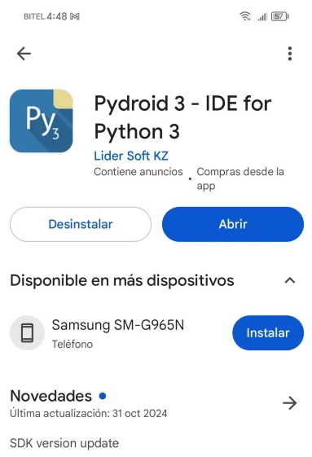
-
Ve al seccion de terminal de la app para instalar la libreria:
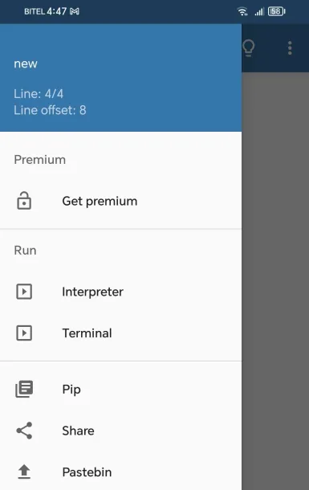
-
En el terminal escribe
pip install --upgrade Amisynth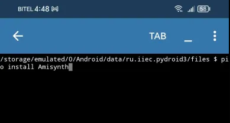
Listo ya puedes usar nuestra Libreria!
Esta aplicacion esta comprobada que no se puede usar en segundo plano
Tipos de usos
En la libreria se pueden hacer varios usos, como el hecho que he puesto a disposicion crear comandos, crear eventos, creas comando con barra digonal.
Crear un comando de discord
# importa LA libreria y luego el cliente
from Amisynth.client import AmiClient
# Has la instancia
bot = AmiClient("!")
# Crea el comando :D
bot.new_command(name)="prueba",
type="text",
code="Hola $username[]!")
bot.run("TOKEN DE TU BOT")
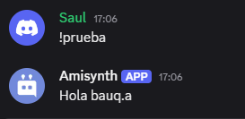
Crea un evento de discord
from Amisynth.client import AmiClient
# Has la instancia
bot = AmiClient("!")
# Crea el evento :D
bot.new_event(name="$onMessage",
code="Hola estoy respondiendo a cualquier mensaje!")
bot.run("TOKEN DE TU BOT")
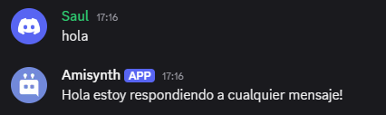
Puedes en ver los eventos disponibles en Eventos
Crea un comando slash de discord
from Amisynth.client import AmiClient
# Has la instancia
bot = AmiClient("!")
bot.new_slash(
name="despedir",
description="Saluda a un usuario con un mensaje personalizado",
code="""
$addSlashOption[usuario;..;Usuario;True;False]
Adios!""")
# Slash Con Choices
bot.new_slash(
name="saludar",
description="Saluda a un usuario con un mensaje personalizado",
code="""
$addSlashOption[mensaje;..;Texto;True;False]
$addSlashChoiceOption[mensaje;Opcion 1;op1]
$addSlashChoiceOption[mensaje;Opcion 2;op2]
Hola!""")
bot.run("TOKEN DE TU BOT")
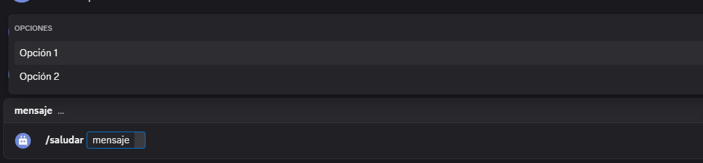
Anatomía de Comandos
-
Comando Básico:
$funcion[...]Cada comando comienza con el signo
$, seguido por el nombre de la función o comando que se desea ejecutar. Este símbolo indica que el bot debe realizar una acción basada en la solicitud. Los comandos se procesan en el siguiente formato:$funcion[argumento1;argumento2;...] -
Argumentos del Comando:
[argumento1;argumento2;...]Los argumentos son los parámetros que el comando necesita para ejecutar una acción. Estos se separan por un punto y coma (
;). Los argumentos son esenciales porque permiten al bot identificar lo que se debe hacer y sobre qué se debe hacer.Tipos de Argumentos:
-
Obligatorios: Son los que siempre deben ser proporcionados por el usuario para ejecutar el comando correctamente. -
Opcionales: Son aquellos que pueden ser omitidos. En este caso, el sistema usará valores predeterminados o el contexto para procesar la solicitud.
-
-
Separador de Argumentos:
;El punto y coma (
;) es el delimitador que separa los diferentes argumentos dentro del comando. Todos los argumentos se incluyen en el mismo bloque de corchetes ([]), pero se separan por punto y coma para facilitar su interpretación.
General
Las secciones estan listas, eligue cual desea experimentarte!
Interacciones
Divicion de Texto
JSON Funciones
JSON Funciones
HTTP Funciones
Interacciones
Las secciones estan listas, eligue cual desea experimentarte!
- Botones
Botones
En esta sección, aprenderá a usar el componente de botón.
Contenido
Funciones utilizadas > Estilo de botón > Tipo de botón > $addButton[] > $editButton[] > $removeButtons[] > $removeComponent[] > Crear interacción
Funciones utilizadas
Estilo de botón
Los botones pueden tener diferentes estilos (colores de fondo).
Aquí se muestran todos los valores posibles para el argumento de la función style.
-
primary- Botón azul -
secondary- Botón gris -
success- Botón verde -
danger- Botón rojo -
link- Botón de redirección
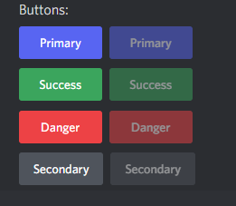
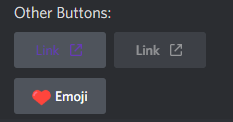
Si se usa el estilo
link, el botón no enviará ninguna interacción.
Tipo de botón
Existen dos tipos de botones: interactivo y link.
Al pulsar un botón interactivo, se envía una interacción que puede usarse junto con $onInteraction.
Cada botón interactivo tiene un ID. Una devolución de llamada $onInteraction solo se activará al presionar el botón con el mismo ID.
Los botones interactivos pueden usar todos los style excepto link.
Los botones de enlace no envían interacciones. Al presionarlos, redirigen al usuario a un sitio web.
Los botones de enlace deben establecer el valor del argumento
styleenlink.
$addButton[]
Agrega un botón al mensaje de respuesta.
Sintaxis
$addButton[¿Nueva fila?;ID/URL de interacción;Etiqueta;Estilo;(¿Deshabilitar?;Emoji;ID del mensaje)]
Parámetros
¿Nueva fila?(Tipo: Bool || Marca: Obligatorio): Si se establece enyes, el botón aparecerá en una nueva fila. Si se establece enno, el botón aparecerá en la misma fila que el botón anterior.
Un mensaje puede tener un máximo de 25 botones (5 filas de 5 botones).
ID de interacción/URL(Tipo: Cadena, URL || Indicador: Obligatorio): Según el tipo de botón, se puede configurar comoID de interacción, que se utiliza en la devolución de llamada$onInteraction, o comoURLsi se trata de un botón de enlace.
No se necesita $onInteraction para la URL.
-
Etiqueta(Tipo: Cadena || Indicador: Vaciable): El texto visible en el botón. -
Estilo(Tipo: Enumeración || Indicador: Obligatorio): Se utiliza para especificar el color de fondo del botón. Si el botón tiene un enlace/URL, debe configurar este valor comolink. Consulte esta sección para obtener más información. -¿Desactivar?(Tipo: Bool || Marca: Vacantable): Si se establece ensí, el botón no se puede presionar. El valor predeterminado esno. -
Emoji(Tipo: Emoji || Marca: Vacantable): Agrega un emoji dentro del botón. Los emojis deben pegarse como unicode o tener el siguiente formato<:emoji name:emoji ID>. -
ID de mensaje(Tipo: Copo de nieve || Marca: Vacantable): Agrega un botón al ID de mensaje proporcionado. Es importante tener en cuenta que el autor del ID de mensaje proporcionado debe ser el bot.
Los botones interactivos no pueden tener
IDduplicados en el mismo mensaje. Por ejemplo, no se pueden tener dos botones con el ID establecido entest.
Si se usa URL en el argumento ID de interacción/URL, debe empezar con http:// o https://
Ejemplo
Test
$addButton[false;value;Prueba de boton;primary;false]
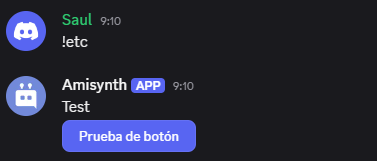
$editButton[]
Edita un botón existente.
Sintaxis
$editButton[ID/URL de interacción; Etiqueta; Estilo; (¿Deshabilitar?; Emoji; ID del mensaje)]
Parámetros
-
ID/URL de interacción(Tipo: Cadena, URL || Marca: Obligatorio): Según el tipo de botón, se establece como unID de interacción, que se utiliza en la devolución de llamada$onInteraction[ID de interacción], o como unaURLsi se trata de un botón de enlace. -
Etiqueta(Tipo: Cadena || Marca: Vaciable): El texto visible en el botón. -
Style(Type: Enum || Flag: Required): Se utiliza para especificar el color de fondo del botón. Si el botón tiene un enlace/URL, debe establecer este valor enlink. Consulte esta sección para obtener más detalles. -
Disable?(Type: Bool || Flag: Vacantable): Si se establece enyes, el botón no se puede presionar. El valor predeterminado esno. (Opcional) -
Emoji(Type: Emoji || Flag: Vacantable): Edita un emoji dentro del botón. Los emojis deben pegarse como unicode o tener el siguiente formato<:emoji name:emoji ID>. (Opcional) -
Message ID(Type: Snowflake || Flag: Vacantable): Edita un botón en un mensaje con el ID proporcionado. Es importante tener en cuenta que el autor del ID del mensaje proporcionado debe ser el bot. (Opcional)
Ejemplo
Desencadenador: $onInteraction
$editButton[test;Nuevo Texto;success;true;🔥;1358169514323480982]
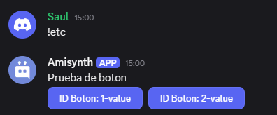
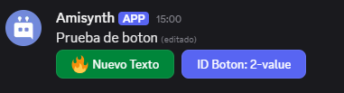
$removeButtons[]
Elimina todos los botones del mensaje especificado. ## Sintaxis
$removeButtons[ID del mensaje]
Parámetros
ID del mensaje(Tipo: Copo de nieve || Marca: Obligatorio): Elimina los botones del mensaje con el ID proporcionado. Es importante tener en cuenta que el autor del ID del mensaje debe ser el bot.
Ejemplo
$removeButtons[1358169514323480982]
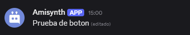
$removeComponent[]
Elimina un componente específico de un mensaje. ## Sintaxis
$removeComponent[ID/URL de interacción;(ID del mensaje)]
Esta función admite select-menu y button.
Parámetros
-
ID/URL de interacción(Tipo: Cadena || Marca: Obligatorio): El ID de interacción del botón que se eliminará del mensaje, establece-1para eliminar todos los compenentes (Incluye Select Menus). -
ID del mensaje(Tipo: Copo de nieve || Marca: Vacante): Elimina el botón del mensaje con el ID proporcionado. Es importante tener en cuenta que el autor del ID del mensaje debe ser el bot. (Opcional)
Ejemplo
$removeComponent[-1;1358169514323480982]
Crear interacción
Ejemplo con la devolución de llamada $onInteraction:
-
Cree dos comandos con los activadores
!exampley$onInteraction. -
Pegue el siguiente código: Código del comando con el disparador
!example:
$nomention
¡Haga clic en el botón de abajo!
$addButton[no;test;Click;primary]
$addButton[no;button;Button disabled;secondary;yes]
$addButton[yes;https://botdesignerdiscord.com/;Link;link]
Código del comando con el disparador $onInteraction:
$editButton[test;Clicked;danger;yes]
$sendMessage[$username hello!]
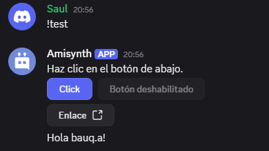
Tenga en cuenta que el ID de interacción proporcionado en
$onInteractiones el mismo que el proporcionado en$addButton[].En
$addButton[],truese usa para el argumentonew row?para que el botón aparezca en la siguiente fila. 3. Ejecuta el comando!example
Ejemplo con la devolución de llamada $onInteraction:
- Crea dos comandos con los disparadores
!testy$onInteraction. - Pega el siguiente código:
Código para el comando con el disparador
!test:
Haz clic en el botón de abajo.
$addButton[false;prueba;Clic;primary]
$addButton[false;botón;Botón deshabilitado;secondary;true]
$addButton[true;https://botdesignerdiscord.com/;Enlace;link]
Código para el nombre del evento $onInteraction:
bot = ..
bot.new_event("$onInteraction",
"""
$if[$checkCondition[$customID[]==prueba];
$editButton[prueba;Clicked;danger;true;;$messageID[]]
$sendMessage[Hola $username[]!]
;]
""")
bot.run(..)
Tenga en cuenta que el ID de interacción devuelto por
$customID[]será tEl mismo que el proporcionado en$addButton[]En
$addButton[], se usatruepara el argumentonew row?para que el botón aparezca en la siguiente fila.
- Ejecutar el comando
!test
¿Cómo funcionan
$onInteraction?
Menú de selección
En esta sección, aprenderá a usar el componente Menú de selección.
Contenido
$newSelectMenu[] > $addSelectMenuOption[] > $editSelectMenuOption[] > $getSelectMenuID[] > $getMenuValueOption[]
Funciones Utilizadas
Muestras


Creación de un menú de selección
$newSelectMenu[Menu ID;Min;Max;(Placeholder;Message ID)]
Menu ID- Se utiliza para la retrollamada$onInteraction[ID]. Funciona de la misma manera que buttons.Mín: cantidad mínima de valores que se pueden seleccionar.Máx: cantidad máxima de valores que se pueden seleccionar.Marcador de posición: texto que aparece si no se selecciona ninguna opción.ID del mensaje: ID de un mensaje al que se debe añadir el menú de selección. Por defecto, es la respuesta del bot.
Añadir una opción
$addSelectMenuOption[ID de la opción del menú;Etiqueta;Valor;Descripción;(Predeterminado;Emoji;ID del mensaje)]
ID de la opción del menú: debe ser el mismo que el ID usado en$newSelectMenu[].Etiqueta: nombre de la opción. -Valor: son los datos que se pasan a la función$onInteraction[]. ¡El valor debe ser único en el menú de selección!Descripción: aparece debajo deetiqueta.Predeterminado: si la opción está seleccionada por defecto. ¡Solo puede haber una opción por defecto!Emoji: aparece junto aetiqueta.ID del mensaje: igual que en$newSelectMenu[].
Ejemplo
Código de selección de menú
$newSelectMenu[Ejemplo;1;1;Elegir una opción]
$addSelectMenuOption[Ejemplo;Primera;primera-opción;La primera opción]
$addSelectMenuOption[Ejemplo;Segunda;segunda-opción;La segunda opción]
$addSelectMenuOption[Ejemplo;Tercera;tercera-opción;La tercera opción]
Código de interacción
$onInteraction
bot = ..
bot.new_event("$onInteraction",
"""
$if[$checCondition[$getSelectMenuID[]==Ejemplo];
$if[$checkCondition[$getMenuValueOption[]==primera-opcion];
Ha elegido la primera opción;]
$if[$checkCondition[$getMenuValueOption[]==segunda-opcion];
Ha elegido la primera opción;]
$if[$checkCondition[$getMenuValueOption[]==tercera-opcion];
Ha elegido la primera opción;]
;] """)
bot.run(..)
Uso

Menú de selección múltiple
En el menú de selección, puede elegir no solo una opción, sino varias a la vez. Esto se puede entender por la presencia de los argumentos «Mín» y «Máx».
Ejemplo
Código del menú Select
Aquí cambiaremos el argumento
Máx.a 3.
$newSelectMenu[Ejemplo;1;3;Elegir una opción]
$addSelectMenuOption[Ejemplo;Primero;primera opción;La primera opción]
$addSelectMenuOption[Ejemplo;Segundo;segunda opción;La segunda opción]
$addSelectMenuOption[Ejemplo;Tercero;tercera opción;La tercera opción]
Interacción Código
$if[$checkContains[$getMenuValueOption[];first-option];
$addCmdReactions[1️⃣]
;]
$if[$checkContains[$getMenuValueOption[];second-option];
$addCmdReactions[2️⃣]
;]
$if[$checkContains[$getMenuValueOption[];third-option];
$addCmdReactions[3️⃣]
;]
Si elegimos varias opciones, se añadirán varias reacciones.
Uso


Edición de un menú de selección
Puede editar el menú de selección, así como sus opciones. ## $editSelectMenu
Uso
$editSelectMenu[ID del menú;Mín;Máx;(Marcador de posición;ID del mensaje)]
$editSelectMenuOption
Uso
$editSelectMenuOption[ID de la opción del menú;Etiqueta;Valor;Descripción;(Predeterminado;Emoji;ID del mensaje)]
Como puede observar, los argumentos son exactamente los mismos.
Ejemplo
Código de menú de selección
$newSelectMenu[Ejemplo;1;1;Elegir una opción]
$addSelectMenuOption[Ejemplo;Primero;primera opción;La primera opción]
$addSelectMenuOption[Ejemplo;Segundo;segunda opción;La segunda opción]
$addSelectMenuOption[Ejemplo;Tercero;tercera opción;La tercera opción]
Código de interacción
Ejemplo 1
$editSelectMenuOption[Ejemplo;Primero;primera opción;La primera opción;false;1️⃣]
$editSelectMenuOption[Ejemplo;Segundo;segunda opción;La segunda opción;false;2️⃣]
$editSelectMenuOption[Ejemplo;Tercero;tercera opción;La tercera opción;false;3️⃣]


Acabamos de añadir emojis a nuestras opciones después de seleccionar cualquier opción.
Comandos de barra
En esta guía, aprenderás más sobre cómo implementar comandos de barra en tu bot.
Los comandos de barra son un tipo de comandos interactivos de aplicación. Permiten a los usuarios interactuar con tu bot escribiendo /<nombre del comando>.

Información general
- Discord permite hasta 200 comandos de barra (100 globales y 100 de gremio).
- Para usar comandos de barra, debes invitar al bot con el alcance
applications.commands. - Crear, modificar o eliminar comandos de barra globales puede tardar hasta 1 hora.
- Crear un comando de barra de gremio es instantáneo, pero no aparecerá a menos que lo hayas registrado en el gremio actual mediante la función
$registerGuildCommands[(nombre del comando de barra;...)].
📝 Los comandos de barra de clan no aparecen en los mensajes directos, a diferencia de los comandos de barra globales.
Primeros pasos
Invitar al bot
-
Método 1
-
Visita el sitio web oficial de Discord Developer y selecciona la aplicación para tu bot.
-
Haz clic en el icono de hamburguesa
≡en la esquina superior izquierda del sitio web y selecciona la pestañaOAuth2. -
En la pestaña
OAuth2, haz clic en la subpestañaGenerador de URL. -
Selecciona
botyapplication.commandsen los ámbitos y permisos deseados para el bot. -
Copia la URL generada a continuación e invita a tu bot a tu servidor.
-
Método 2
-
Abre la aplicación BDFD y selecciona tu bot.
-
Pulsa el botón
Añadir invitación de bot al servidoren la pestaña del panel. - Haz clic en "Editar ámbitos de enlace de invitación" y habilita "Comandos de barra" si está deshabilitado. -
Ahora, regresa y presiona "Agregar tu bot a tu servidor".
-
Finalmente, invita al bot a tu servidor.
Crear un comando de barra
- Crea o modifica un comando existente.
- Haz clic en "Activador de comando de barra".
- Elige "Habilitar comando de barra global" o "Habilitar comando de barra de gremio", según tus preferencias.
- Completa los datos necesarios y guárdalos.
📝 Los comandos de barra pueden tener un máximo de 4000 caracteres (nombre, descripción y propiedades de valor combinadas) por barra.
Ejemplo
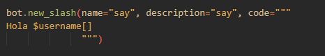
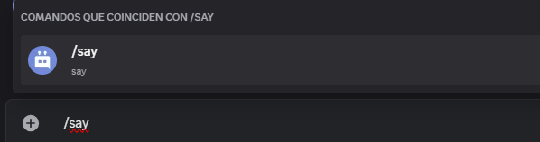
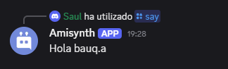
Opciones de barra diagonal
Las opciones de barra diagonal son una excelente manera de obtener la entrada del usuario en los comandos de barra diagonal.
Para crear una opción de barra diagonal:
- Abra la página de edición del disparador del comando de barra diagonal.
- Haga clic en el botón "Añadir" en la sección "Opciones".
- Complete los datos necesarios y guarde los cambios.
📝 Los comandos de barra pueden tener hasta 25 opciones por barra.
Tipos de opciones de barra
- Texto: Acepta cualquier cadena de caracteres.
- Entero: Acepta solo valores enteros. Por ejemplo: 3, -70, etc.
- Número: Acepta solo valores numéricos. Por ejemplo: 5.3, -35, 23, etc.
- Booleano: Acepta valores verdaderos o falsos.
- Usuario: Permite mencionar a cualquier usuario.
- Canal: Permite mencionar a cualquier canal.
- Rol: Permite mencionar a cualquier rol.
- Mencionable: Permite mencionar a cualquier usuario o rol.
- Archivos adjuntos: Permite subir archivos adjuntos.
Recuperar valor de las opciones
Para recuperar el valor de una opción, utilice $messageSlash[<nombre de la opción>].
📝 Si quieres que esta función funcione tanto con comandos normales como con comandos de barra diagonal, puedes usar
$messageSlash[<option name>].
Ejemplo
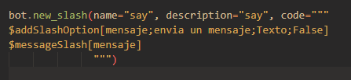 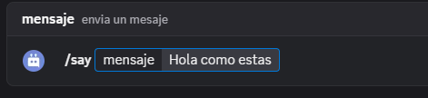 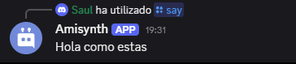
Opciones predefinidas
Para crear opciones:
- En la página de edición del disparador de comandos de barra diagonal, cree una opción y complete los datos necesarios.
- Active la opción "Habilitado" en la sección "Opciones predefinidas".
- Luego, haga clic en el botón "Agregar una nueva opción".
- Escriba el nombre y el valor de la opción. - Haga clic en "Añadir" y guarde los cambios.
📝 Un comando de barra diagonal puede tener hasta 25 opciones por opción.
Recuperación de opciones
Puede recuperar las opciones del usuario mediante sentencias $if.
Formato
bot = ..
bot.new_slash(name="say", description="say", code="""
$addSlashOption[frutas;Elige una fruta;Texto;True]
$addSlashChoiceOption[frutas;manzana;manzana-agria]
$addSlashChoiceOption[frutas;durazno;durazno-dulce]
$addSlashChoiceOption[frutas;pera;pera-dulce]
Elegiste: $messageSlash[frutas]
""")
bot.run(..)
Ejemplo
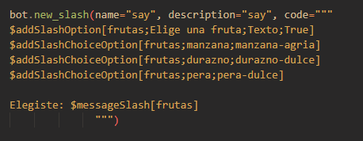 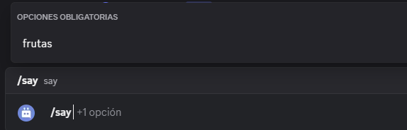 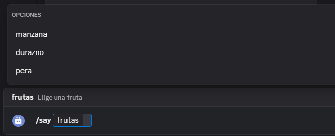 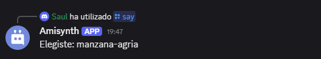
Divicion de Texto
En esta sección, aprenderá cómo utilizar la división de texto.
Funciones utilizadas
$textSplit[]
Divide el texto proporcionado utilizando un separador y guarda el valor temporalmente.
Sintaxis
$textSplit[Texto;Separador]
Parámetros
-
Texto(Tipo: String || Opcional): El texto a dividir. -
Separador(Tipo: String || Opcional): El carácter o cadena utilizada para dividir el texto.- Si este parámetro está vacío, el texto se dividirá por cada carácter individualmente.
Ejemplo
$textSplit[hello-world-!;-]
> $splitText[2]
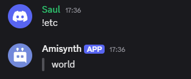
$splitText[]
Cada fragmento de texto separado tiene un número de índice. $splitText es una función que devuelve uno de los elementos del texto dividido según el índice especificado o los signos < y > para obtener el primer o último elemento, respectivamente.
Sintaxis
$splitText[Índice]
Parámetros
-
Índice(Tipo: Número o Símbolo || Obligatorio): El índice del fragmento de texto a obtener.- Usa un número (
2,3, etc.) para obtener el fragmento en esa posición. - Usa
<para obtener el primer fragmento. - Usa
>para obtener el último fragmento.
- Usa un número (
Ejemplo
$textSplit[hello world !; ]
> $splitText[<] // Obtiene "hello"
> $splitText[2] // Obtiene "world"
> $splitText[>] // Obtiene "!"
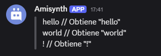
$getTextSplitLength[]
Devuelve la cantidad de fragmentos obtenidos después de dividir un texto con $textSplit[].
Sintaxis
$getTextSplitLength
Ejemplo #1
$textSplit[hello%world%!;%]
> $getTextSplitLength // Devuelve 3
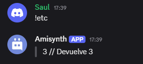
$getTextSplitIndex[]
Obtiene el índice de un valor dentro del texto dividido con $textSplit. Devuelve -1 si el valor no se encuentra.
Sintaxis
$getTextSplitIndex[Valor]
Parámetros
Valor(Tipo: String || Opcional): El valor a buscar dentro del texto dividido.
Ejemplo
Ejemplo #1
$textSplit[hello_world_!;_]
> $getTextSplitIndex[$message[-1]] // Devuelve el índice del valor en la lista dividida o -1 si no se encuentra
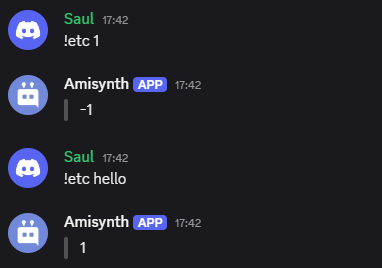
$joinSplitText[]
Esta función devuelve los elementos actuales del texto dividido, unidos con el separador especificado.
Sintaxis
$joinSplitText[Separador]
Parámetro
Separador:(Tipo: String || Opcional)El separador que se usará entre los valores del texto dividido.
Ejemplo #1
$textSplit[h-o-l-a;$message[1]]
$joinSplitText[+]
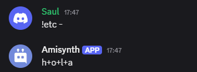
$removeSplitTextElement[]
Esta función elimina un elemento del texto dividido según el índice especificado.
Sintaxis
$removeSplitTextElement[Índice]
Parámetro
Índice:(Tipo: Entero || Obligatorio)El índice del valor en$textSplit[]que se desea eliminar.
Ejemplo
$textSplit[hola-mundo-!;-]
$removeSplitTextElement[2]
> $joinSplitText[-]

$editSplitText[]
Esta función reemplaza el elemento en el índice especificado con un nuevo valor.
Sintaxis
$editSplitText[Índice;Valor]
Parámetros
-
Índice:(Tipo: Entero || Obligatorio): El índice del elemento que se desea editar. -
Valor:(Tipo: String || Obligatorio): El nuevo valor que reemplazará al elemento en el índice proporcionado.
Ejemplo
$textSplit[hello-world-!;-]
$editSplitText[2;amisynth]
> $joinSplitText[-] // Devuelve "hello-bdfd-!"
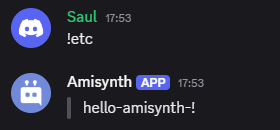
JSON Funciones
Antes de leer esta guía, deberías estar familiarizado con JSON y dónde y cómo se utiliza. Puedes familiarizarte con JSON leyendo un tutorial en Mozzilla.
Funciones utilizadas
$jsonParse[]
$jsonParse es la función principal utilizada cuando se trabaja con datos JSON.
Esta función analiza una cadena JSON y la convierte en un objeto que luego puede ser utilizado por otras funciones JSON.
Sintaxis
$jsonParse[JSON string]
Solo puede usar para claves y valores en str este tipo de comilla:
'
Parámetros
JSON string(Tipo: String || Obligatorio): La cadena JSON que se analizará y convertirá en un objeto.
Ejemplo:
JSON guardado. $jsonParse[{'numero': 100}]
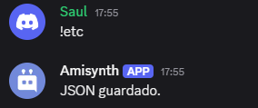
$json[]
La función $json recupera valores JSON de una clave especificada en el objeto JSON actual.
La función $json devolverá una cadena vacía si el valor es nulo, la clave no existe, no se ejecutaron las funciones $jsonParse o $jsonSet, o se ejecutó $jsonClear.
Sintaxis
$json[Key;...]
Parámetros
Key(Tipo: String || Flag: Required): La clave JSON que se recuperará.
Ejemplos
# Sin arrays
$jsonParse[{
'username': 'Izana',
'tag': '6700',
'identity': {
'age': 16
}
}]
Nombre de usuario: $json[username]
Etiqueta: $json[tag]
Edad: $json[identity;age] años
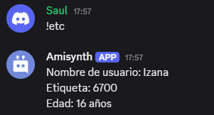
$jsonSet[]
La función $jsonSet establece o reemplaza el valor en la clave JSON especificada.
Sintaxis
$jsonSet[Key;...;Value]
Parámetros
Key(Tipo: String || Obligatorio): La clave JSON donde se establecerá o reemplazará el valor.Value(Tipo: Integer, Bool, Float, String || Obligatorio): El valor que se asignará o reemplazará en la clave especificada.
Ejemplo
$jsonParse[{
'username': 'Izana',
'tag': "6700",
'identity': {
'age': 16
}
}]
Nombre de usuario: $json[username]
Etiqueta: $json[tag]
Edad: $json[identity;age] años
$jsonSet[username;Priyanuj]
$jsonSet[tag;2626]
$jsonSet[identity;age;19]
Nombre de usuario: $json[username]
Etiqueta: $json[tag]
Edad: $json[identity;age] años
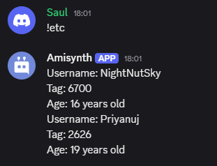
$jsonSetString[]
La función $jsonSetString establece o reemplaza el valor en la clave JSON especificada. Siempre establece el valor como una cadena.
Sintaxis
$jsonSetString[Key;...;Value]
Parámetros
-
Key(Tipo: String || Flag: Required): La clave JSON donde se establecerá o reemplazará el valor. -
Value(Tipo: String || Flag: Required): El valor a establecer o reemplazar.
Esta función se recomienda principalmente para comandos relacionados con economía.
Ejemplo
$nomention
$jsonParse[{}]
$jsonSet[balance;$message]
Balance key was set to: $json[balance]
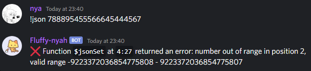
Usando $jsonSetString
$nomention
$jsonParse[{}]
$jsonSetString[balance;$message]
Balance key was set to: $json[balance]
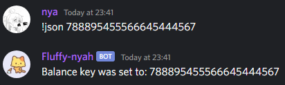
$jsonUnset[]
La función $jsonUnset elimina el valor en la clave JSON especificada.
En resumen, es la función opuesta a $jsonSet.
Sintaxis
$jsonUnset[Key;...]
Parámetros
Key(Tipo: String || Flag: Required): La clave JSON que se eliminará.
Ejemplo
$jsonParse[{
"username": "NightNutSky",
"tag": "6700",
"identity": {
"age": 16
}
}]
Username: $json[username]
Tag: $json[tag]
Age: $json[identity;age] years old
$jsonUnset[username]
$jsonUnset[tag]
$jsonUnset[identity;age]
$optOff[Username: $json[username]
Tag: $json[tag]
Age: $json[identity;age] years old]
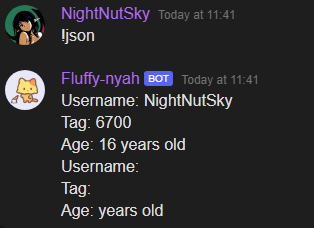
$jsonClear[]
La función $jsonClear elimina el objeto JSON actual, restableciendo su contenido.
Sintaxis
$jsonClear[]
Ejemplo
$jsonParse[{
'username': 'Izana',
'tag': '6700',
'identity': {
'age': 16
}
}]
Nombre de usuario: $json[username]
$jsonClear[]
Nombre de usuario: $json[username]
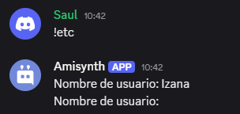
$jsonExists[]
La función $jsonExists verifica si una clave JSON especificada existe en el objeto JSON actual.
Devuelve un resultado vacío si no se ejecutaron las funciones
$jsonParseo$jsonSet, o si se ejecutó$jsonClear.
Sintaxis
$jsonExists[Key;...]
Parámetros
Key(Tipo: String || Flag: Required): La clave JSON que se verificará.
Ejemplo
$jsonParse[{
'user': {
'name': 'Amisadai',
'age': 20
}
}]
$jsonExists[user;name] ✅ La clave 'name' existe.
$jsonExists[user;email] ❌ La clave 'email' no existe.
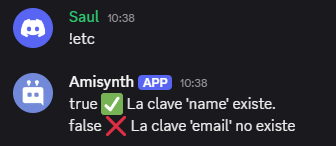
$jsonStringify[]
La función $jsonStringify[] convierte el objeto JSON actual en una cadena de texto.
La función
$jsonStringify[]devolverá una cadena vacía si no se ejecutaron las funciones$jsonParseo$jsonSet, o si se ejecutó$jsonClear.
Sintaxis
$jsonStringify[]
Ejemplo
$jsonParse[{
'computer': [{
'apps': {
'software': ['BlueStacks', 'Krita', 'Visual Studio Code'],
'games': ['GTA 5', 'RDR 2', 'CS:GO', 'Cyberpunk 2077']
}
},{
'cpu': 'Intel',
'gpu': 'NVIDIA',
'ram': 'XPG'
}]
}]
$jsonStringify[]
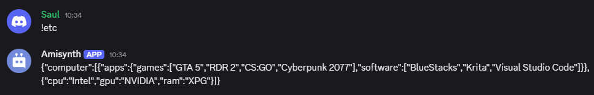
$jsonPretty[]
La función $jsonPretty convierte el objeto JSON actual en una cadena formateada con sangría para una mejor visualización.
La función
$jsonPrettydevolverá un resultado vacío si no se ejecutaron las funciones$jsonParseo$jsonSet, o si se ejecutó$jsonClear.
Sintaxis
$jsonPretty[Indent length]
Parámetros
Indent length(Tipo: Integer || Flag: Required): La cantidad de espacios usados para la indentación. Generalmente es2o4.
Ejemplo
$nomention
$disableInnerSpaceRemoval
$jsonParse[{
'ordenador': [{
'aplicaciones': {
'software': ['BlueStacks', 'Krita', 'Visual Studio Code'],
'games': ['GTA 5', 'RDR 2', 'CS:GO', 'Cyberpunk 2077']
}
},{
'cpu': 'Intel',
'gpu': 'NVIDIA',
'ram': 'XPG'
}]
}]
$jsonPretty[4]
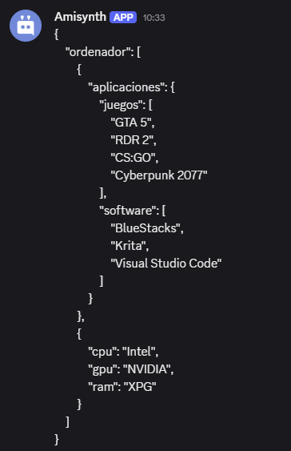
$jsonArray []
La función $jsonArray marca una clave JSON especificada como un array.
Sintaxis
$jsonArray[Key;...]
Parámetros
Key(Tipo: String || Obligatorio): La clave JSON que será marcada como un array.
Ejemplo
$jsonParse[{
'games': ''
}]
Clave `games` sin array:
$jsonPretty[4]
$jsonArray[games]
Clave `games` convertida en array:
$jsonPretty[4]
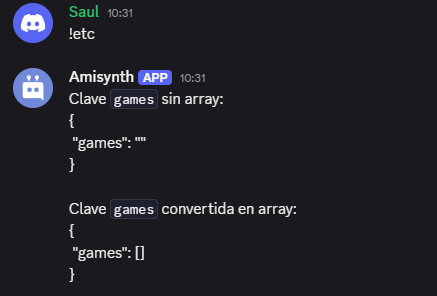
$jsonArrayCount[]
La función $jsonArrayCount cuenta los elementos en la clave JSON especificada.
Sintaxis
$jsonArrayCount[Key;...]
Parámetros
key(Tipo: String || Obligatorio)La clave JSON donde se contarán los elementos.
Ejemplo
$jsonParse[{
'computer': [{
'apps': {
'software': ['BlueStacks', 'Krita', 'Visual Studio Code'],
"games": ['GTA 5', 'RDR 2', 'CS:GO', 'Cyberpunk 2077']
}
},{
'cpu': 'Intel',
'gpu': 'NVIDIA',
'ram': 'XPG'
}]
}]
$onlyIf[$checkCondition[$jsonExists[computer;0;apps;$message[-1]]==true];¡La categoría especificada no existe! Categorías disponibles: `software` y `games`]
La cantidad de aplicaciones en `$message[-1]` es: $jsonArrayCount[computer;0;apps;$message[-1]].
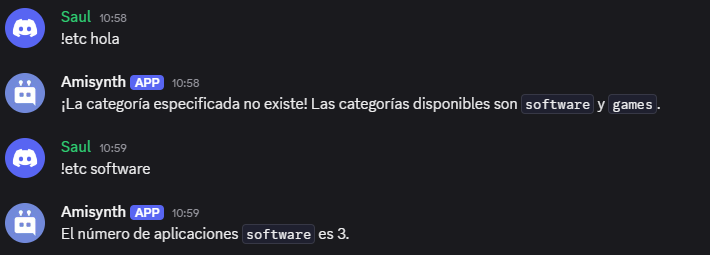
$jsonArrayIndex[]
La función $jsonArrayIndex obtiene el índice de un valor dentro de un array JSON.
La función
$jsonArrayIndexdevolverá-1si el valor no se encuentra y devolverá un resultado vacío si no se ejecutaron$jsonParseo$jsonSet, o si se ejecutó$jsonClear.
Sintaxis
$jsonArrayIndex[Key;...;Value]
Parámetros
-
key(Tipo: String || Obligatorio)La clave JSON donde se buscará el valor. -
value(Tipo: String, Integer, Float || Obligatorio)El valor a buscar dentro del array.
Ejemplo
$jsonParse[{
'computer': [{
'apps': {
'software': ['BlueStacks', 'Krita', 'Visual Studio Code'],
"games": ['GTA 5', 'RDR 2', 'CS:GO', 'Cyberpunk 2077']
}
},{
'cpu': 'Intel',
'gpu': 'NVIDIA',
'ram': 'XPG'
}]
}]
El índice de `$message[-1]` en `apps/software` es: $jsonArrayIndex[computer;0;apps;software;$message[-1]].
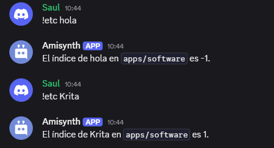
$jsonArrayAppend[]
La función $jsonArrayAppend agrega un valor al final de la clave JSON especificada.
Sintaxis
$jsonArrayAppend[Key;...;Value]
Parámetros
-
key(Tipo: String || Obligatorio)La clave JSON donde se agregará el valor. -
value(Tipo: Integer, Bool, Float, String || Obligatorio)El valor que se agregará al final del array.
Ejemplo
$jsonParse[{
'computer': [{
'apps': {
'software': ['BlueStacks', 'Krita', 'Visual Studio Code'],
'games': ['GTA 5', 'RDR 2', 'CS:GO', 'Cyberpunk 2077']
}
},{
'cpu': 'Intel',
'gpu': 'NVIDIA',
'ram': 'XPG'
}]
}]
$onlyIf[$checkCondtion[$jsonExists[computer;0;apps;$message[1]]==true];¡La categoría especificada no existe! Categorías disponibles: `software` y `games`]
$let[value;$replaceText[$message[-1];$message[1];]]
$jsonArrayAppend[computer;0;apps;$message[1];$get[value]]
¡Se agregó una nueva aplicación a la categoría `$message[1]`!
Aplicaciones actuales en la categoría `$message[1]`: $json[computer;0;apps;$message[1]]
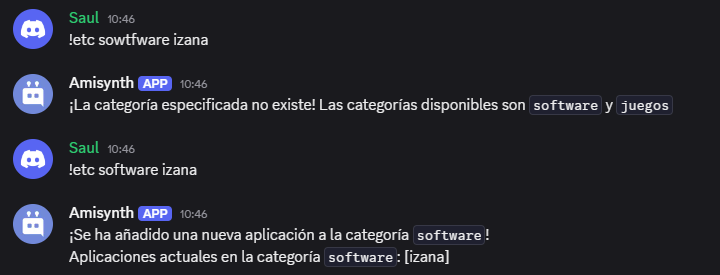
$jsonArrayPop[]
La función $jsonArrayPop elimina el último elemento de un array y devuelve el elemento eliminado.
Sintaxis
$jsonArrayPop[Key;...]
Parámetros
key(Tipo: String || Obligatorio)La clave del array del cual se eliminará un elemento.
Ejemplo
$jsonParse[{
'music': ['Paranoid - MADKID', 'Ping! 2 - Exyl', 'Tokyo - Leat'eq']
}]
Eliminado: $jsonArrayPop[musica]
Música actual:
> $jsonJoinArray[musica;, ]
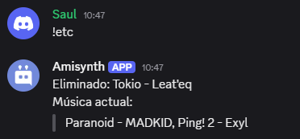
$jsonArrayShift[]
La función $jsonArrayShift[] elimina el primer elemento de un array y devuelve el elemento eliminado.
Sintaxis
$jsonArrayShift[Key;...]
Parámetros
key(Tipo: String || Obligatorio)La clave del array del cual se eliminará un elemento.
Ejemplo
$jsonParse[{
'music': ['Paranoid - MADKID', 'Ping! 2 - Exyl', 'Tokyo - Leateq']
}]
Eliminado: $jsonArrayShift[music]
Música actual:
> $jsonJoinArray[music;, ]
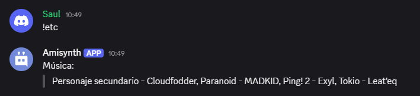
$jsonArrayUnshift[]
La función $jsonArrayUnshift agrega un valor al inicio de un array JSON.
Sintaxis
$jsonArrayUnshift[Key;...;Value]
Parámetros
-
key(Tipo: String || Requerido)La clave del array JSON donde se añadirá el valor. -
value(Tipo: Float, String, Bool, Integer || Requerido)El valor que se agregará al inicio del array.
Ejemplo
$jsonParse[{
'music': ['Paranoid - MADKID', 'Ping! 2 - Exyl, 'Tokyo - Leat'eq]
}]
$jsonArrayUnshift[music;Side Character - Cloudfodder]
Música:
> $jsonJoinArray[music;, ]
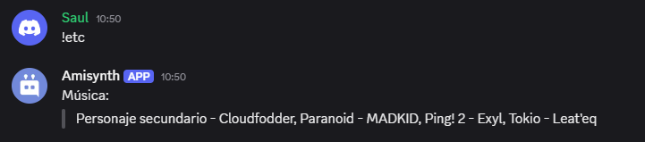
$jsonArraySort[]
La función $jsonArraySort ordena un array JSON específico en orden ascendente.
La función ordena los elementos en el siguiente orden:
- Números enteros de menor a mayor.
- Cadenas de texto basadas en sus valores ASCII/Unicode.
Sintaxis
$jsonArraySort[Key;...]
Parámetros
key(Tipo: String || Opcional)La clave del array JSON que se ordenará.
Ejemplo
$jsonParse[{
'data': ['Oranges', 'banana', 10, 'apple', 'Apples', 2, 30]
}]
$jsonArraySort[data]
Después de ordenar:
> $json[data]
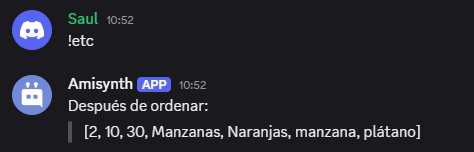
$jsonArrayReverse[]
La función $jsonArrayReverse invierte el orden de un array JSON específico.
Sintaxis
$jsonArrayReverse[Key;...]
Parámetros
key(Tipo: String || Opcional)La clave del array JSON que se invertirá.
Ejemplo
$jsonParse[{
'fruits': ['apple', 'orange', 'banana', 'grape']
}]
$jsonArrayReverse[fruits]
Después de invertir:
> $json[fruits]
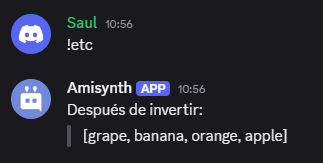
$jsonJoinArray[]
La función $jsonJoinArray une un array JSON bajo la clave especificada utilizando el separador dado.
La función
$jsonJoinArraydevolverá una cadena vacía si el valor esnull, la clave no existe, no se ejecutaron las funciones$jsonParseo$jsonSet, o si se ejecutó$jsonClear.
Sintaxis
$jsonJoinArray[Key;...;Separator]
Parámetros
Key(Tipo: String || Flag: Required): La clave JSON que apunta a un array que será recuperado.Separator(Tipo: String || Flag: Required): El separador que se utilizará para unir los elementos del array.
Ejemplo
$jsonParse[{
'music': ['Paranoid - MADKID', 'Ping! 2 - Exyl', 'Tokyo - Leat\'eq']
}]
Music:
> $jsonJoinArray[music;, ]
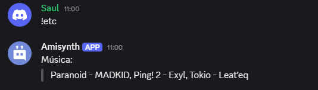
Variables
Las variables son la forma en que almacenamos los datos en Amisynth. Los datos se pueden asignar a usuarios, servidores, canales y globalmente. Cada variable tiene dos elementos, que desglosaremos en esta sección.
Elementos de la variable
Nombre: El nombre de la variable. El bot no puede modificarlo; se utiliza para llamar a la variable actual.
Valor: El valor de la variable. El bot puede modificarlo y se devuelve cuando se llama al nombre de la variable en $getVar/$getUserVar/$getServerVar/$getChannelVar.
Como iniciar
# Establesca el parametro variables_json como True
bot = AmiClient(prefix="..", variables_json=True)
Ahora podra usar variables y almacenar datos mediante un JSON.
Antes de leer la guia de abajo, recuerde que cuando establesca un valor de variable de cualquier tipo estara creando la variable al mismo tiempo.
Recuerde que por el momento las variables se manejan en su propio entorno mediante en un archivo JSON creado automaticamente.
Variables globales de usuario - Funciones
$setVar/$getVar son funciones de variables globales, lo que significa que se aplican universalmente (es decir, no cambian por servidor, canal ni usuario).
Sin embargo, si se proporciona un ID de usuario en el parámetro opcional User ID, se convierte en una variable de usuario global.
El valor de las variables de usuario globales se mantiene igual para el usuario en todos los servidores. El uso de las variables globales de usuario se ve así:
-
$setVar[Nombre de la variable;Nuevo valor;ID del usuario] -
$getVar[Nombre de la variable;ID del usuario]
Variables globales - Funciones
-
$setVar[Nombre de la variable;Nuevo valor]: Cambia el valor de la variable global proporcionada a 'Nuevo valor'. -
$getVar[Nombre de la variable]: Obtiene el valor actual de la variable global proporcionada.
📌 Las variables globales son universales, lo que significa que si la variable se modifica, la modificación se aplica a todos.
Variables de usuario por servidor - Funciones
Las variables de usuario son únicas para cada usuario y varían según el servidor.
-
$setUserVar[Variable Name;New Value;(User ID;Guild ID)]: Establece el valor de la variable proporcionada para el "New Value" del "User ID" y el "Guild ID" especificados, o el autor del comando si no se proporciona el "User ID" y el guild actual si no se proporciona el "Guild ID". -
$getUserVar[Variable Name;(User ID;Guild ID)]: Obtiene el valor actual de la variable de usuario proporcionada. Devuelve el valor de la variable del autor si no se proporciona el "User ID" y utiliza el guild actual si no se proporciona el "Guild ID".
Variables por servidor - Funciones
Las variables del servidor son únicas para cada servidor.
-
$setServerVar[Variable Name;New Value;(Server ID)]: Establece la variable proporcionada como 'New Value' para el 'Server ID' especificado o para el servidor en el que se ejecutó el comando si no se proporcionó ningún 'Server ID'. -
$getServerVar[Variable Name;(Server ID)]: Obtiene el valor actual de la variable del servidor proporcionada. Si no se proporcionó ningún 'Server ID', devuelve el valor actual de la variable del servidor.
Variables de canal por servidor - Funciones
-
$setChannelVar[Variable Name;New Value;(Channel ID)]: Establece la variable proporcionada en 'New Value' para el 'Channel ID' proporcionado, o el canal en el que se ejecutó el comando; si no se proporcionó ningún 'Channel ID'. -
$getChannelVar[Variable Name;(Channel ID)]: Obtiene el valor actual de la variable de canal proporcionada. Devuelve el valor actual de la variable de canal si no se proporcionó ningún 'Channel ID'.
Economía
Local vs. Global
-
Economía Local: Cambia por servidor. Si un usuario tiene 10,000 monedas en un servidor, en otro tendrá una cantidad diferente. Por ejemplo, Unbelievaboat tiene una economía local. (La economía local usa variables de usuario)
-
Economía Global: No cambia por servidor. Si un usuario tiene 10,000 monedas en un servidor, en otro tendrá la misma cantidad. Por ejemplo, Dank Memer tiene una economía global. (La economía global usa variables de usuario globales)
Economía Local
- Reemplaza "Dinero" con tu variable de efectivo/dinero. Si "Dinero" es el nombre de tu variable de dinero, ¡déjala como está!
- Reemplaza "Cantidad" con la cantidad de dinero que quieres añadir/quitar al usuario. Así:
100,$random[1;11],$random[100;1001],10000.
Obtiene el saldo actual del usuario. Si se menciona a un usuario, el bot devolverá el saldo de ese usuario:
$getUserVar[Money;$mentioned[1]]
Añade dinero al usuario mencionado:
$setUserVar[Money;$sum[Amount;$getUserVar[Money;$mentioned[1]]];$mentioned[1]]
Añade dinero al usuario que ejecuta el comando:
$setUserVar[Money;$sum[Amount;$getUserVar[Money]]]
Retira dinero al usuario mencionado:
$setUserVar[Money;$sub[Amount;$getUserVar[Money;$mentioned[1]]];$mentioned[1]]
Retira dinero al usuario que ejecuta el comando Comando:
$setUserVar[Money;$sub[Amount;$getUserVar[Money]]]
Economía global
-
Reemplaza "Money" por tu variable de efectivo/dinero. Si "Money" es el nombre de tu variable de dinero, ¡déjala como está!
-
Reemplaza "Amount" por la cantidad de dinero que quieres añadir/quitar al usuario. Por ejemplo:
100,$random[1;11],$random[100;1001],10000.
Obtiene el saldo/cantidad de dinero actual del usuario. Si se menciona a un usuario, el bot devolverá el saldo de ese usuario:
$getVar[Money;$mentioned[1]]
Añade dinero al usuario mencionado:
$setVar[Money;$sum[Amount;$getVar[Money;$mentioned[1]]];$mentioned[1]]
Añade dinero al usuario que ejecuta el comando:
$setVar[Money;$sum[Amount;$getVar[Money;$authorID[]]];$authorID[]]
Retira dinero al usuario mencionado:
$setVar[Money;$sub[Amount;$getVar[Money;$mentioned[1]]];$mentioned[1]]
Retira dinero al usuario que ejecuta el comando Comando:
$setVar[Money;$sub[Amount;$getVar[Money;$authorID[]]];$authorID[][]]
Clasificaciones
Puede generar clasificaciones de variables utilizando las siguientes funciones:
- $getLeaderboardValue - Obtiene el valor de la tabla de clasificación.
- $getLeaderboardPosition - Obtiene la posicion de un usuario en la tabla (solo valida en numeros).
Solicitudes HTTP
- Una solicitud HTTP es una acción que se realiza en un recurso identificado por una URL.
Antes de leer esta guía, tenga en cuenta que esta función no está destinada a nuevos usuarios de BDFD, ya que es bastante avanzada.
Tipos de Solicitudes HTTP
Esta es una lista de todos los tipos de solicitudes HTTP disponibles.
GET
- Recupera datos de un recurso.
$httpGet[url]
POST
- Los datos enviados al servidor mediante POST se almacenan en el cuerpo de la solicitud HTTP.
$httpPost[url;(body)]
PUT
- El método PUT reemplaza todas las representaciones actuales del recurso de destino con la carga útil de la solicitud.
$httpPut[url;(body)]
DELETE
- El método DELETE elimina el recurso especificado.
$httpDelete[url;(body)]
PATCH
- El método PATCH aplica modificaciones parciales a un recurso.
$httpPatch[url;(body)]
Encabezados HTTP
- Los encabezados HTTP se utilizan para agregar más información. Generalmente, se usan para enviar una clave de API a la API.
$httpAddHeader[nombre del encabezado;valor del encabezado]
Estados HTTP
- Si la API no devuelve nada después de realizar una solicitud, pero necesita conocer el resultado, los estados HTTP pueden ser útiles. Puede obtener más información sobre ellos aquí.
$httpStatus
Resultados HTTP
- Para devolver el resultado de una función de un método HTTP, puede usar
$httpResult[-1]/$httpResult[clave;..].
Uso n.° 1
$httpResult[-1]
Recupera el valor de texto de la solicitud HTTP.
Uso n.° 2
$httpResult[Clave JSON;...]
Recupera el JSON de la solicitud HTTP. Todos los argumentos después de Clave JSON son opcionales.
Ejemplos
Nivel básico
Un ejemplo usando la función
$httpGet
$httpGet[https://nekos.best/api/v2/neko]
$title[¡Aquí tienes un Neko!]
$description[**Source:** $httpResult[results;0;source_url]]
$image[$httpResult[results;0;url]]
$footer[nekos.best API]
$color[#e91e63]
Mostrar ejemplo de respuesta de la API
{
"results":[
{
"artist_href":"https://www.pixiv.net/en/users/4284365",
"artist_name":"イカたると",
"source_url":"https://www.pixiv.net/en/artworks/55142454",
"url":"https://nekos.best/api/v2/neko/0023.png"
}
]
}

API: nekos.best
Nivel avanzado
Un ejemplo que usa una función con un cuerpo de solicitud (p. ej.,
$httpPost) y usa$httpAddHeader
$httpAddHeader[tipo-contenido;application/x-www-form-urlencoded]
$httpPost[https://pastebin.com/api/api_post.php;api_dev_key=7CP52G-BTQP_1AhyBBlTa94qyjE6vHzU&api_paste_code=$url[encode;$message[-1]]&api_option=paste]
$httpResult[-1]


API: pastebin.com
Recusos
Creación de BDFD
Cómo Bot Amisynth se convirtió en lo que es hoy.
¿Quién desarrolla Amisynth?
| Nombre | Usuario de Discord | Posición |
|---|---|---|
| Saul Correa Vargas | bauq.a | Propietario/Desarrollador |
| Sam Bueno Vargas | izana.py | Desarrollador |
| Carlos Cordova Vargas | carlos.update | Desarrollador |
El equipo
The BDS World es un servidor de dos propietaros y un integrante de discord que iniciaron el proyecto, a base de una sub libreria hecha por un ruso.
Indices de Embed
Si revisas las funciones de embed en BDFD (por ejemplo, $title, $footer, etc.), notarás un argumento llamado Indice. Este argumento se utiliza para crear múltiples embeds.
📝 Discord permite crear un máximo de 10 embeds por mensaje de bot.
Creación de Múltiples Embeds
Por defecto, el Indice está establecido en 1 (el primer embed). Para crear un segundo embed, debes escribir 2 en el argumento Indice, y así sucesivamente. Puedes especificar cualquier número entre 1 y 10 en el argumento Indice.
📝 La longitud total de caracteres de la respuesta completa no debe superar los 6,000. Si lo hace, el bot no enviará el mensaje.
Ejemplo
$nomention
$title[Título #1]
$description[Descripción #1]
$title[Título #2;2]
$description[Descripción #2;2]
$title[Título #3;3]
$description[Descripción #3;3]
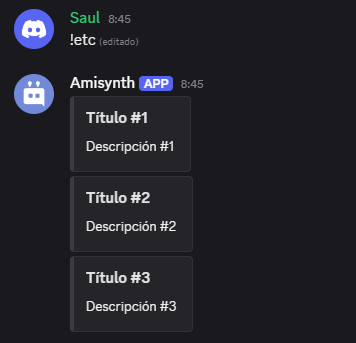
Marca de Tiempo en Discord
Los timestamps en Discord se utilizan para mostrar la hora en múltiples formatos. La información se ajusta automáticamente a la zona horaria y el idioma del usuario. Los timestamps en Discord están basados en el sistema de Tiempo Unix, lo que significa que son dinámicos. Pueden ser utilizados por cualquier persona, incluidos usuarios, webhooks y aplicaciones.
Sintaxis
Sintaxis del timestamp: <t:unixTime:Style>
Estilos
Aquí tienes una lista de todos los estilos de formato de tiempo admitidos:
| Estilo | Entrada | Salida | Descripción |
|---|---|---|---|
| t | <t:1667219160:t> | 12:26 AM | Hora corta |
| T | <t:1667219160:T> | 12:26:00 AM | Hora larga |
| d | <t:1667219160:d> | 31/10/2022 | Fecha corta |
| D | <t:1667219160:D> | 31 de octubre de 2022 | Fecha larga |
| f | <t:1667219160:f> | 31 de octubre de 2022 12:26 AM | Fecha/Hora corta |
| F | <t:1667219160:F> | Lunes, 31 de octubre de 2022 12:26 AM | Fecha/Hora larga |
| R | <t:1667219160:R> | Hace 27 minutos | Tiempo relativo |
📌 El estilo predeterminado es
fsi no se especifica un estilo.
Usabilidad
Funciones que devuelven timestamps en formato UNIX:
Ejemplo
$nomention
<t:$getTimestamp:D>

Sistema de ID de Discord
El sistema de ID de Discord permite que los bots gestionen y utilicen IDs para obtener/editar datos de objetos (por ejemplo, obtener el nombre de un usuario, eliminar un rol, etc.).
¿Qué es una ID?
Una ID es un identificador de objeto de Discord. Desglosémoslo:
- Un 'objeto' se refiere a un canal, rol, usuario, servidor/gremio, etc. de Discord.
- Un 'identificador' (comúnmente llamado 'ID') es el número de varios dígitos al que pertenece el objeto.
Activar el Modo Desarrollador
Para poder acceder y copiar IDs en el cliente de Discord, debes activar el modo desarrollador. Así es como se hace:
-
Escritorio


-
Móvil
Ve a Configuración de Usuario > Apariencia > Avanzado y activa el Modo Desarrollador.

Encontrar IDs
¿Dónde encuentro estas 'IDs'?
Puedes utilizar 'Funciones que devuelven IDs' para obtener IDs.
Si deseas obtener IDs usando tu cliente, consulta la guía completa de Discord sobre cómo obtener IDs!
Usando IDs en Comandos
Existen muchas funciones que utilizan IDs, como $deleteChannels, $modifyRole, $banID y muchas más.
Tomemos $deleteChannels como ejemplo. Para eliminar un canal, necesitamos la ID del canal. Así es como podría verse $deleteChannels:
$deleteChannels[320949943877437847]
$c[Elimina la ID de canal personalizada proporcionada.]
$deleteChannels[$channelID[]]
$c[Elimina el canal donde se ejecutó el comando.]
$deleteChannels[$mentionedChannels[1]]
$c[Elimina el canal mencionado.]
⚠️ Ten cuidado de no mezclar tipos de ID. Por ejemplo, no puedes hacer
$deleteChannels[$authorID]. Esto es porque$authorIDdevuelve una ID de usuario, no una ID de canal.
Funciones que devuelven IDs
$authorID[]/$userID[]/$roleID[]/$channelID[]$findUser[]/$findChannel[]/$findRole[]$mentioned[]/$mentionedChannels[]/$mentionedRoles[]- ... (algunas otras)
Usando IDs para Menciones
- Mencionando a un usuario -
<@userID[]> - Mencionando un rol -
<@&roleID[]> - Mencionando un canal -
<#channelID> - Usando un emoji
- Estático -
<:emojiName:emojiID> - Animado -
<a:emojiName:emojiID>
- Estático -
- Mencionando un Slash
- Normal -
</name:commandID> - Subcomando -
</name subcommandName:commandID> - Grupo de subcomando -
</name subcommandGroup subcommandName:commandID>
- Normal -
- Mencionando un servidor - Los servidores no pueden ser mencionados.
📝 ¡Los usuarios que no son bots también pueden usar IDs para mencionar objetos!
Este es el texto traducido. Si necesitas algún ajuste, no dudes en comentarlo.
Permisos
Los permisos permiten a los usuarios tener privilegios y accesos específicos en un servidor. Algunos permisos pueden ser tan básicos como permitir que los usuarios agreguen reacciones a los mensajes, mientras que otros otorgan acciones más administrativas. Estos permisos se basan en los roles asignados a los usuarios en un servidor y pueden configurarse tanto a nivel de servidor como a nivel de canal.
Lista de Permisos
A continuación se muestra la lista de permisos compatibles con BDFD:
| Permiso | Descripción |
|---|---|
| addreactions | Permite reaccionar con emojis en mensajes (No afecta los emojis existentes en los mensajes). |
| admin | Concede todos los permisos y omite todas las sobrescrituras de permisos de canal. |
| attachfiles | Permite subir archivos adjuntos en los canales. |
| ban | Permite expulsar y desbanear miembros. |
| changenicknames | Permite editar el propio apodo en el servidor. |
| connect | Permite unirse a canales de voz/escenario. |
| createinstantinvite | Permite crear invitaciones. |
| createprivatethreads | Permite crear hilos privados. |
| createpublicthreads | Permite crear hilos públicos. |
| embedlinks | Permite enviar contenido incrustado y enlaces en los canales. |
| externalemojis | Permite usar emojis personalizados de otro servidor. |
| externalstickers | Permite usar stickers personalizados de otro servidor. |
| kick | Permite expulsar miembros. |
| managechannels | Permite crear/eliminar/modificar canales en el servidor. |
| manageemojis | Permite crear/eliminar/modificar emojis y stickers personalizados del servidor. |
| manageevents | Permite crear/eliminar/modificar eventos en el servidor. |
| managemessages | Permite eliminar mensajes de otros miembros y fijar/desfijar mensajes en los canales. |
| managenicknames | Permite modificar los apodos de los miembros del servidor. |
| manageroles | Permite crear/eliminar/modificar roles del servidor. También permite modificar los permisos individuales de los canales. |
| manageserver | Permite crear/modificar reglas de AutoMod, agregar bots, ver invitaciones y cambiar la configuración del servidor. |
| managethreads | Permite crear/eliminar/modificar hilos en los canales. |
| managewebhooks | Permite crear/eliminar/modificar webhooks en los canales. |
| mentioneveryone | Permite mencionar con @everyone, @here y a todos los roles del servidor. |
| moderatemembers | Permite silenciar temporalmente a los miembros (timeout/untimeout). También conocido como "Timeout members". |
| movemembers | Permite mover miembros entre canales de voz/escenario. |
| priorityspeaker | Permite ser escuchado con prioridad en canales de voz/escenario. |
| readmessagehistory | Permite ver el historial de mensajes del canal. |
| readmessages | Permite ver un canal. También conocido como "Ver canal". |
| requesttospeak | Permite solicitar hablar en un canal de escenario. |
| sendmessages | Permite enviar mensajes en los canales. |
| sendmessagesinthreads | Permite enviar mensajes en hilos. |
| sendvoicemessages | Permite enviar mensajes de voz en los canales. |
| slashcommands | Permite usar comandos de aplicación (comandos de barra / y menús de contexto) en los canales. También conocido como "Usar Comandos de Aplicación". |
| speak | Permite hablar en un canal de voz/escenario. |
| stream | Permite transmitir en vivo en canales de voz/escenario. |
| tts | Permite enviar mensajes de texto a voz (TTS). |
| usesoundboard | Permite usar sonidos del soundboard del servidor en canales de voz. |
| usevad | Permite usar la detección de actividad de voz. Los miembros sin este permiso deberán usar la función de pulsar-para-hablar (push-to-talk). También conocido como "Usar actividad de voz". |
| viewauditlog | Permite ver los registros de auditoría del servidor. |
| viewguildinsights | Permite ver estadísticas del servidor. |
| voicedeafen | Permite ensordecer a un miembro en un canal de voz/escenario. |
| voicemute | Permite silenciar a un miembro en un canal de voz/escenario. |
📝 Todos los permisos son insensibles a mayúsculas y minúsculas (es decir, tanto
BANcomoBanfuncionarán).
Hipervínculos
Un hipervínculo es texto clicable. Al hacer clic en él, el usuario accede a una URL específica.
Hipervínculos generales
Puede usar hipervínculos dentro de $description[], $addField[], webhook content/description, slash command contenido de respuesta y contenido de respuesta efímero $onInteraction.
Sintaxis
[texto\\](enlace)
Nota: Esta es la sintaxis para BDScript 2 y BDScript Unstable. Para BDScript, la sintaxis es
[texto](enlace).
Nota: Si se usan hipervínculos dentro del contenido de respuesta de comando con barra diagonal o del contenido de respuesta efímera
$onInteraction, se debe usar la sintaxis de BDScript. No aplica a hipervínculos dentro de funciones que los admiten.
Ejemplo
$description[Este bot está creado con [Amisynth Paquete\\](https://pypi.org/project/Amisynth/)]
Hipervínculos de título
Usa la función $titleURL para agregar un hipervínculo en $title.
Hipervínculos de autor
Usa la función $authorURL para agregar un hipervínculo en $author.
Funciones
Soon
$addButton[]
Añade un botón a un mensaje.
Sintaxis
$addButton[¿Nueva fila?;ID/URL de interacción;Etiqueta;Estilo;(¿Deshabilitar?;Emoji;ID del mensaje)]
Parámetros
¿Nueva fila?(Tipo: Bool || Marca: Obligatorio): Si se establece en sí, el botón aparecerá en una nueva fila. Si se establece en no, el botón aparecerá en la misma fila que el botón anterior.
Un mensaje puede tener un máximo de 25 botones (5 filas de 5 botones).
-
ID/URL de interacción(Tipo: Cadena, URL || Marca: Obligatorio): Según el tipo de botón, se establece en ID de interacción, que se utiliza en la devolución de llamada $onInteraction[ID], o en URL si se trata de un botón de enlace. -
Etiqueta(Tipo: Cadena || Marca: Vaciable): El valor de texto visible en el botón. -
Estilo(Tipo: Enumeración || Indicador: Obligatorio): Se utiliza para especificar el color de fondo del botón. Si el botón tiene un enlace/URL, debe establecer el valor en enlace. Consulte esta sección para obtener más detalles. -
¿Deshabilitar?(Tipo: Bool || Indicador: Vacante): Si se establece en sí, el botón no se puede presionar. El valor predeterminado es no. -
Emoji(Tipo: Emoji || Indicador: Vacante): Agrega un emoji dentro del botón. Los emojis deben pegarse como Unicode, alias o tener el siguiente formato: <:emoji name:emoji ID>. -
ID de mensaje(Tipo: Copo de nieve || Indicador: Vacante): Agrega el botón al ID de mensaje proporcionado. Es importante tener en cuenta que el autor del ID de mensaje proporcionado debe ser el bot.
Ejemplo
Test
$addButton[false;id;Prueba de boton;primary;false]
$addField[]
$addField Añade un campo a una incrustación.
Sintaxis
$addField[Nombre;Valor;(¿Inline?;Índice)]
📌 Puedes añadir hasta 25 campos por incrustación.
Parámetros
-
Nombre(Tipo: Cadena || Indicador: Obligatorio): El nombre del campo. No puede superar los 256 caracteres. -
Valor(Tipo: Cadena || Indicador: Obligatorio): El valor del campo. No puede superar los 1024 caracteres. -
¿Inline?(Tipo: Bool || Indicador: Opcional): Si la opción es sí, los campos aparecerán en la misma línea. Sin embargo, si tienes más de 3 campos (o si son demasiado largos) con la opción en línea -
habilitada, el bot devolverá filas con 3 campos (2 si hay una miniatura) en cada fila. Por defecto, está configurado como no. -
Índice(Tipo: Entero || Indicador: Opcional): Añade el campo a un número de índice de incrustación especificado. (aprender más)
Ejemplo #1:
$addField[¡El nombre del campo 1!;¡El valor del campo 1!]
$addField[¡El nombre del campo 2!;¡El valor del campo 2!]
$addField[¡El nombre del campo 3!;¡El valor del campo 3!]
Ejemplo #2:
$nomention
$addField[¡Nombre del campo 1!;¡Valor del campo 1!;true]
$addField[¡Nombre del campo 2!;¡Valor del campo 2!;true]
$addField[¡Nombre del campo 3!;¡Valor del campo 3!;true]
$addSelectMenuOption[]
Añade una nueva opción de menú de selección a un menú de selección existente.
Sintaxis
$addSelectMenuOption[ID de opción de menú;Etiqueta;Valor;Descripción;(¿Predeterminado?;Emoji;ID de mensaje)]
Parámetros
-
ID de opción de menú(Tipo: Cadena || Marca: Obligatorio): El ID utilizado en$newSelectMenu[]. -
Etiqueta(Tipo: Cadena || Marca: Obligatorio): El nombre de la opción. -
Valor(Tipo: Cadena || Marca: Obligatorio): Son los datos que se pasan a la retrollamada$onInteraction[]. ¡El valor debe ser único en el menú de selección! -
Description(Type: String || Flag: Vacantable): Un texto que aparece debajo deLabel. -
Default?(Type: Bool || Flag: Vacantable): Si la opción debe seleccionarse por defecto o no. El valor predeterminado esno. (yes/no) ¡Solo puede haber una opción predeterminada! -
Emoji(Type: Emoji || Flag: Vacantable): El emoji que aparece junto aLabel. -
Message ID(Type: String || Flag: Vacantable): El ID de un mensaje al que se debe añadir una nueva opción del menú de selección a un menú de selección existente. Por defecto, es la respuesta del bot.
Ejemplo
$nomention
$newSelectMenu[Ejemplo;1;1;Elegir una opción]
$addSelectMenuOption[Ejemplo;Primero;primera-opcion;La primera opción]
$addSelectMenuOption[Ejemplo;Segundo;segunda-opcion;La segunda opción]
$addSelectMenuOption[Ejemplo;Tercero;tercera-opcion;La tercera [opción]


Para más información, consulta la Guía del Menú Seleccionar.
$average[]
Calcula el promedio (media aritmética) de los números proporcionados.
Sintaxis
$average[Número;..]
Parámetros
Número(Tipo: Coma flotante, Entero || Indicador: Obligatorio): Los números a promediar. Use punto y coma;como separador para pasar varios números.
Ejemplo
$argsCheck[>2;❌ Uso no válido. Uso: `!promedio (número1) (número2)`]
$average[$message[1];$message[2]]
$abs[]
Devuelve el numero absoluto proporcionado.
Sintaxis
$adbc[Número]
Parámetros
Número(Tipo: Coma flotante, Entero || Indicador: Obligatorio): Devuelve el valor absoluto prporcionado.
Ejemplo
$argsCheck[>2;❌ Uso no válido. Uso: `!promediar (número1)`]
$abs[$message[1]]
$and[]
Devuelve True si todas las condiciones proporcionadas son verdaderas; de lo contrario, devuelve False.
Sintaxis
$and[Condiciones;...]
Parámetros
Condiciones(Tipo: Cadena || Indicador: Obligatorio): Comprobaciones que se realizarán. Todas las condiciones deben ser verdaderas para que esta función devuelvatrue. Separe las condiciones con;.
Signos
== - Igual
!= - Distinto
< - Menor que
> - Mayor que
>= - Mayor o igual que
<= - Menor o igual que
- El significado de estos signos puede variar según el orden o la intención de la sentencia if.
- Si usa texto como
xoy, no puede usar otros signos además de==y!=. Sin embargo, para los números, puedes usar cualquier signo de la lista anterior.
Ejemplo
$and[$nickname[]==Saul;$message[-1]==Prueba]
$argsCheck[]
Al usar esta función, el comando solo se puede ejecutar si el mensaje del usuario contiene una cierta cantidad de argumentos (palabras).
Sintaxis
$argsCheck[¿Cuántos?;Mensaje de error]
Parámetros
¿Cuántos?(Tipo: HowMany || Indicador: Obligatorio): Cuántos argumentos debe tener el mensaje del usuario.
Si desea que los usuarios tengan 3 o más argumentos en su mensaje, puede usar
>3. Si desea que los usuarios tengan menos de 3 argumentos en su mensaje, puede usar<3. Si desea que los usuarios tengan exactamente 3 argumentos en su mensaje, escriba3.
Mensaje de error(Tipo: String || Indicador: Vaciable): El mensaje que el bot enviará si el usuario tiene demasiados o pocos argumentos.
Ejemplo
$nomention
$argsCheck[>1;❌ ¡Por favor, dame algo que decir!]
$message[-1]
$author[]
$author Añade el texto del autor a una incrustación.
Sintaxis
$author[Texto;(Índice)]
Parámetros
-
Texto(Tipo: Cadena || Marca: Vaciable): El texto que aparece en el texto del autor. No puede superar los 256 caracteres. -
Índice(Tipo: Entero || Marca: Opcional): A qué incrustación se añadirá el texto del autor. (Más información)
Codigo de Ejemplo
$author[$username[]]
$authorIcon[]
$authorICon Añade el texto del autor a una incrustación.
Sintaxis
$authorIcon[URL;(Índice)]
Parámetros
-
URL(Tipo: Cadena || Marca: Vaciable): La imagen del icono del autor. Debe ser una URL de imagen válida. -
Índice(Tipo: Entero || Marca: Opcional): A qué incrustación se añadirá el texto del autor. (Más información)
Codigo de ejemplo
$authorIcon[$userAvatar[]]
$author[<- icono de author]
$authorURL[]
$authorURL Añade un hipervínculo al texto del autor.
Sintaxis
$authorURL[URL;(Índice)]
$authorURL[] no funcionará si no se proporciona texto en $author[].
Parámetros
-
URL(Tipo: URL || Marca: Vaciable): El enlace que se establecerá como hipervínculo del autor. -
Índice(Tipo: Entero || Marca: Opcional): A qué se añadirá la URL del autor. (Más información)
Codigo de ejemplo
$authorURL[$authorAvatar[]]
$author[Texto de author con URL]
$addTimestamp[]
Añade una marca de tiempo a una incrustación.
Sintaxis
$addTimestamp[(Indice)]
Parámetros
Índice(Tipo: Entero || Marca: Opcional): A qué incrustación se añadirá el texto del autor. (Más información)
Ejemplo
$description[¡Hola!]
$footer[Esa es la marca de tiempo =>]
$addTimestamp[]
$ban[]
Banea a un usuario del servidor mediante su ID y registra una razón.
Sintaxis
$ban[ID de usuario; Razón del baneo]
Parámetros
ID de usuario(Tipo: Entero || Indicador: Obligatorio): El ID del usuario que será baneado del servidor.Razón del baneo(Tipo: Texto || Indicador: Opcional): El motivo por el cual el usuario fue baneado. Si se omite, se registrará "sin razón específica".
Ejemplo
$argsCheck[>2;❌ Uso incorrecto. Uso: `!ban (ID del usuario) (razón)`]
Usuario Baneado: $message[1]
$ban[$mensaje[1];$message[2]]
El bot debe tener el permiso
Ban Members.
Asegúrate de que el ID sea válido y que el usuario esté en el servidor (según las capacidades de tu sistema).
La razón se guarda si tu sistema o bot la admite para registros o auditoría.
$break[]
$channelID[]
Devuelve el ID del canal para el nombre del canal especificado.
Sintaxis
$channelID[(Nombre del canal)]
Parámetros
Nombre del canal(Tipo: Cadena || Marca: Opcional): El nombre del canal.
Codigo de ejemplo
Canal ID: $channelID[]
$checkCondition
Comprueba si una condición es verdadera o falsa.
Sintaxis
$checkCondition[Condición]
Parámetros
Condición(Tipo: Cadena || Marca: Obligatorio): La condición a comprobar.
Operadores
-
==- Igual a -
!=- Diferente de -
<- Menor que -
>- Mayor que -
>=- Mayor o igual a -
<=- Menor o igual a
Ejemplos
#1
Es verdero la condicion?: $checkCondition[$message[-1]==hola]
#2
Es verdero la condicion?: $checkCondition[$message[-1]==2]
$checkContains[]
Comprueba si el texto contiene al menos una de las frases proporcionadas.
Sintaxis
$checkContains[Texto;Frases;...]
Parámetros
-
Texto(Tipo: Cadena || Marca: Vaciable): El texto que se comprobará. -
Frases(Tipo: Cadena || Marca: Vaciable): Las frases/palabras que el bot comprobará enTexto. Separa las frases con;.
Ejemplo
$checkContains[hola;$message[1]]
$color[]
$color Establece el color del borde de la incrustación.
Sintaxis
$color[Color hex;(Índice)]
Parámetros
-
Colorhex (Tipo: Color || Marca: Vaciable): El color hexadecimal para establecer el color del borde de la incrustación. También puede usar un número entero. -
Índice(Tipo: Entero || Marca: Opcional): A qué incrustación debe pertenecer el borde de color (opcional). El valor predeterminado es 1. (Más información)
$color[#000001]
$description[<- Este es el color]
$channelIDs[]
Enumera todos los nombres de canales separados por un separador.
Sintaxis
$channelIDs[Separador;(ID del gremio)]
Parámetros
-
Separador(Tipo: Cadena || Marca: Vaciable): El separador utilizado para separar los nombres de los canales. -
ID del gremio(Tipo: Copo de nieve || Marca: Opcional): El gremio del que se devuelven los nombres de los canales. (Predeterminado: el gremio actual)
Ejemplo
$channelIDs[-;$guildID[]]
$channelNames[]
$channelNames[] retornar todos los nombre de los canales del servidor
Sintaxis
$channelNames[separador;(guild opcional)]
Parámetros
-
Separador(Tipo: Cadena | Obligatorio) → Especifica el carácter o texto que separará los nombres de los canales en la lista. -
Guild ID(Tipo: ID | Opcional) → ID del servidor del que se desean obtener los nombres de los canales. Si se omite, se usará el servidor donde se ejecutó el comando.
Ejemplo
$channelNames[|]
🔹 Devuelve algo como: general, memes, música, sugerencias
$channelName[]
Devuelve el nombre del ID del canal proporcionado. Sintaxis
$channelName[ID del canal]
Parámetros
ID del canal(Tipo: Copo de nieve || Marca: Obligatorio): El canal cuyo nombre se devolverá.
Ejemplo
$channelName[$channelID[]]
$channelSystem[]
Devuelve el ID del canal del sistema del servidor
No requiere parametros
Codigo de ejemplo
$eval[$message[1]]
$channelPosition[]
Devuelve la posicion del canal ID del canal proporcionado.
Sintaxis
$channelPosition[ID del canal]
Parámetros
ID del canal(Tipo: Copo de nieve || Marca: Obligatorio): El canal cuyo nombre se devolverá.
Codigo de ejemplo
Posicion del canal $channelPosition[1354997612234674226]
$categoryIDs[]
$categoryIDs[] retorna todos los nombres de las categorías del servidor.
Sintaxis
$categoryIDs[separador;(guild opcional)]
Parámetros
-
Separador(Tipo: Cadena | Obligatorio)→ Especifica el carácter o texto que separará los nombres de las categorías en la lista. -
Guild ID(Tipo: ID | Opcional)→ ID del servidor del que se desean obtener los nombres de las categorías. Si se omite, se usará el servidor donde se ejecutó el comando.
Ejemplo
$categoryIDs[|]
🔹 Devuelve algo como: 1171903881001832591|1171903881001832595|1171903881442242634
$categoryNames[]
$categoryNames[] retorna todos los nombres de las categorías del servidor.
Sintaxis
$categoryNames[separador;(guild opcional)]
Parámetros
-
Separador(Tipo: Cadena | Obligatorio)→ Especifica el carácter o texto que separará los nombres de las categorías en la lista. -
Guild ID(Tipo: ID | Opcional)→ ID del servidor del que se desean obtener los nombres de las categorías. Si se omite, se usará el servidor donde se ejecutó el comando.
Ejemplo
$categorysNames[|]
🔹 Devuelve algo como: Información, General, Juegos, Staff
$createChannel[]
Crea un nuevo canal.
Sintaxis
$createChannel[Nombre;Tipo;(ID de categoría)]
Discord permite a los usuarios crear hasta 500 canales por servidor. Esto incluye todos los tipos de canales.
Parámetros
Nombre(Tipo: Cadena || Indicador: Obligatorio): El nombre del nuevo canal.
Los nombres de los canales pueden tener un máximo de 100 caracteres.
Tipo(Tipo: Enumeración || Indicador: Obligatorio): El tipo de canal. Tipos de canal:categoríatextovozescenarioforoID de categoría(Tipo: Copo de nieve || Indicador: Opcional): La categoría a la que se asignará el canal (si corresponde).
Ejemplo
$eval[$message[-1]]
$calculate[]
Sintaxis
$calculate[Expresión]
Parámetros
Expresión(Tipo: Cadena || Indicador: Obligatorio): La expresión matemática a resolver.
Signos
+- Suma.-- Resta./- División.*- Multiplicación.%- Módulo.**- Potencia.()- Paréntesis para insertar ecuaciones.
Ejemplo
$calculate[$message[-1]] 🧠
$customID[]
$customID[] retorna el ID personalizado de una interacción con botones o menús desplegables en Discord.
Sintaxis
$customID[]
📌 Nota: Solo funciona dentro de eventos como
$onInteraction.
Ejemplo
bot = ..
bot.new_event("$onInteraction", "customid: $customID[]")
bot.run(..)
🔹 Si un usuario hace clic en un botón con ID "value-1", el bot responderá:
"customid: value-1."
$description[]
$description Añade una descripción a una incrustación.
Sintaxis
$description[mensaje;(índice)]
Parámetros
-
Message(Tipo: Cadena || Marca: Vaciable): El texto que se usará para la descripción. No puede superar los 4096 caracteres. -
Indice(Tipo: Entero || Marca: Opcional): A qué incrustación debe pertenecer la descripción. El valor predeterminado es 1. (Más información)
Permisos
Permisos necesarios que el bot debe tener para que esta función funcione correctamente:
- sendmessages
- sendmessagesinthreads
- embedlinks
Ejemplo #1
$description[Esta es la descripcion;1]
$divide[]
Divide los números proporcionados.
Sintaxis
$divide[Números]
Parámetros
Números(Tipo: Entero, Flotante || Indicador: Obligatorio): Los números a dividir. Separe los números con;.
Ejemplo
Respuesta: $divide[10;$message[-1]]
$editButton
Edita un botón existente.
Sintaxis
$editButton[ID/URL del botón;Etiqueta;Estilo;(Deshabilitado;Emoji;ID del mensaje)]
Parámetros
-
ID/URL del botón(Tipo: Cadena, URL || Marca: Obligatorio): El ID o la URL del botón que se desea editar. -
Etiqueta(Tipo: Cadena || Marca: Vaciable): La nueva etiqueta que se muestra en el botón. -
Estilo(Tipo: Enumeración || Marca: Obligatorio): El estilo del botón. Todos los estilos se listan a continuación. -
Deshabilitado(Tipo: Bool || Marca: Vaciable): Si se establece ensí, el botón no se puede presionar. El valor predeterminado esno. -Emoji(Tipo: Emoji || Bandera: Vacante): Edita o añade un emoji dentro del botón. Los emojis deben pegarse como Unicode o tener el siguiente formato<:emoji name:emoji ID>. -
ID de mensaje(Tipo: Copo de nieve || Bandera: Vacante): Añade un botón al ID de mensaje proporcionado. Es importante tener en cuenta que el autor del ID de mensaje debe ser el bot.
Estilo del botón Los botones pueden tener diferentes estilos (colores de fondo). Aquí se muestran todos los valores posibles para el argumento de la función
primary- Botón azulsecondary- Botón grissucess- Botón verdedanger- Botón rojolink- Botón de redirección
Ejemplo
$nomention
$username[] dijo hola!
$editButton[test;¡Saluda!;primary;true;]
$addButton[false;http://botdesignerdiscord.com;Visita nuestra web;link;false;👀]
Para más información, consulta la Guía de Botones.
$editMessageAfter[]
$editMessageAfter[] devuelde el mensaje ya editado.
Sintaxis
$editMessageAfter[]
Parámetros
No requiere Parametros, solo funciona en el evento
$onMessageEdit
Ejemplo
Contenido Original: $editMessageBefore[]
Contenido Nuevo: $editMessageAfter[]
$editMessagBefore[]
$editMessagBefore[] devuelde el mensaje ya editado.
Sintaxis
$editMessagBefore[]
Parámetros
No requiere Parametros, solo funciona en el evento
$onMessageEdit
Ejemplo
Contenido Original: $editMessageBefore[]
$editChannelAfter[]
Obtiene el estado después de la edición de un canal de servidor de Discord. Esta función es útil cuando quieres acceder a atributos específicos del canal después de que haya sido modificado (por ejemplo, cambio de nombre, tema, permisos, etc.).
Sintaxis
$editChannelAfter[Atributo]
Parámetros
Atributo(Tipo: Cadena|| Marca: Obligatorio): El nombre del atributo del canal que deseas obtener después de la edición.
Devuelve el valor del atributo solicitado del canal editado. Si el atributo no existe o no se encuentra disponible, devuelve una cadena vacía (
"").
Ejemplo de uso
Canal cambiado de nombre, antes: #$editChannelBefore[name] $url[decode;%0A]
Canal cambiado de nombre, Despues #$editChannelAfter[name]
🔎 Atributos comunes disponibles
Dependiendo del tipo de canal (texto, voz, foro, etc.), los siguientes atributos pueden estar disponibles:
| Atributo | Descripción |
|---|---|
id | ID del canal |
name | Nombre del canal |
type | Tipo de canal (texto, voz, etc.) |
position | Posición en la lista de canales |
topic | Tema del canal (solo canales de texto) |
nsfw | Si el canal está marcado como NSFW |
bitrate | Calidad de audio (solo canales de voz) |
user_limit | Límite de usuarios (solo canales de voz) |
slowmode_delay | Modo lento en segundos (canales de texto) |
category_id | ID de la categoría a la que pertenece |
created_at | Fecha de creación del canal |
permissions_synced | Si hereda permisos de su categoría |
Este comando solo funciona en contextos donde se está procesando un evento de edición de canal (
$onChannelEdit)
$editChannelBefore[]
Obtiene el estado antes de la edición de un canal de servidor de Discord. Esta función es útil cuando quieres acceder a atributos específicos del canal antes de que haya sido modificado (por ejemplo, cambio de nombre, tema, permisos, etc.).
Sintaxis
$editChannelBefore[Atributo]
Parámetros
Atributo(Tipo: Cadena|| Marca: Obligatorio): El nombre del atributo del canal que deseas obtener antes de la edición.
Devuelve el valor del atributo solicitado del canal editado. Si el atributo no existe o no se encuentra disponible, devuelve una cadena vacía (
"").
Ejemplo de uso
Canal cambiado de nombre, antes: #$editChannelBefore[name] $url[decode;%0A]
Canal cambiado de nombre, Despues #$editChannelAfter[name]
🔎 Atributos comunes disponibles
Dependiendo del tipo de canal (texto, voz, foro, etc.), los siguientes atributos pueden estar disponibles:
| Atributo | Descripción |
|---|---|
id | ID del canal |
name | Nombre del canal |
type | Tipo de canal (texto, voz, etc.) |
position | Posición en la lista de canales |
topic | Tema del canal (solo canales de texto) |
nsfw | Si el canal está marcado como NSFW |
bitrate | Calidad de audio (solo canales de voz) |
user_limit | Límite de usuarios (solo canales de voz) |
slowmode_delay | Modo lento en segundos (canales de texto) |
category_id | ID de la categoría a la que pertenece |
created_at | Fecha de creación del canal |
permissions_synced | Si hereda permisos de su categoría |
Este comando solo funciona en contextos donde se está procesando un evento de edición de canal (
$onChannelEdit)
$editSelectMenu[]
Edita un menú de selección.
Puede editar la opción del menú de selección con
$editSelectMenuOption[].
Sintaxis
$editSelectMenu[ID del menú; Mín; Máx; (Marcador de posición; ID del mensaje)]
Parámetros
-
ID del menú(Tipo: Cadena || Marcador: Obligatorio): El ID del menú de selección que desea editar. -
Mín(Tipo: Entero || Marcador: Obligatorio): La cantidad mínima de valores que se pueden seleccionar. -
Máx(Tipo: Entero || Marcador: Obligatorio): La cantidad máxima de valores que se pueden seleccionar. -
Marcador de posición(Tipo: Cadena || Marcador: Vacante): El texto que aparece si no se selecciona ninguna opción. -ID del mensaje(Tipo: Copo de nieve || Marca: Opcional): El mensaje para el cual se editará un menú de selección.
Ejemplo
$editSelectMenu[Ejemplo;1;1;Elige una opción 😀]
$addSelectMenuOption[Ejemplo;Primero;primera opción;La primera opción]
$addSelectMenuOption[Ejemplo;Segundo;segunda opción;La segunda opción]
$addSelectMenuOption[Ejemplo;Tercero;tercera opción;La tercera [opción]


Para más información, consulta la Guía del Menú Seleccionar.
$editSelectMenuOption[]
Edita una opción del menú de selección.
Puede editar el menú de selección principal con
$editSelectMenu[].
Sintaxis
$editSelectMenuOption[ID de la opción del menú;Etiqueta;Valor;Descripción;(Predeterminado;Emoji;ID del mensaje)]
Parámetros
-
ID de la opción del menú(Tipo: Cadena || Marca: Obligatorio): El ID del menú de selección. Debe ser el mismo que el ID utilizado en su$newSelectMenu[]. -
Etiqueta(Tipo: Cadena || Marca: Obligatorio): El nombre de la opción. -
Valor(Tipo: Cadena || Marca: Obligatorio): El valor de la opción. Son los datos que se pasan a la función$onInteraction[]. ¡El valor debe ser único en el menú de selección! -
Description(Type: String || Flag: Vacantable): La descripción de la opción. Se muestra debajo deLabel. -
Default(Type: Bool || Flag: Vacantable): Decide si la opción debe seleccionarse por defecto. ¡Solo puede haber una opción por defecto! -
Emoji(Type: Emoji || Flag: Vacantable): El emoji de la opción. Se muestra junto aLabel. -
Message ID(Type: Snowflake || Flag: Optional): El ID del mensaje, menú asociado.
Código de interacción
$editSelectMenuOption[Ejemplo;Primero;primera opción;La primera opción;false;1️⃣]
$editSelectMenuOption[Ejemplo;Segundo;segunda opción;La segunda opción;false;2️⃣]
$editSelectMenuOption[Ejemplo;Tercero;tercera opción;La tercera opción;false;3️⃣]
Salida
Antes
Después
Para más información, consulta la Guía del Menú Seleccionar.
$eventEmojiAdd[]
Devuelve el emoji que fue agregado en un evento de reacción (usado dentro de eventos como $onReactionAdd o $onReactionRemove).
Sintaxis
$eventEmojiAdd[]
🔄 Retorna:
- El emoji en formato texto o unicode (por ejemplo:
😊,🔥). - Si es un emoji personalizado, devolverá algo como
<:nombre:id>o<a:nombre:id>si es animado.
Ejemplo
bot = ..
bot.new_event("$onReactionAdd", "Emoji agregado: $eventEmojiAdd[]")
bot.run(..)
🔹 Si un usuario llamado "Saul" reacciona con "✅" en el canal #general, el bot enviará:
$eval[]
Evalúa el código proporcionado.
⚠️ ¡Se recomienda usar con precaución! ⚠️
Sintaxis
$eval[Código fuente]
Parámetros
Código fuente(Tipo: Cadena || Marca: Vaciable): El código que se evaluará.
Ejemplo
$eval[$message[-1]]
¿Cómo funciona
$message[-1]?
⚠️ ¡Debe usarse con precaución! ⚠️
Se recomienda restringir el comando para que solo lo usen los desarrolladores del bot. Esto se puede hacer con:
$nomention
$onlyForIDs[$botOwnerID[];❌ ¡No eres mi propietario!]
$eval[$message[-1]]
¿Cómo funcionan
$onlyForIDs[]y$botOwnerID[]?
$exec[]
Ejecuta código Python si se cumple una condición booleana.
Sintaxis
$exec[condición_booleana;Código python]
Parámetros
-
condición_booleana(Tipo: Bool || Marca: Obligatorio): Expresión booleana que debe evaluarse comoTruepara ejecutar el código. -
código_python(Tipo: Código || Marca: Obligatorio): Código Python que se ejecutará si la condición es verdadera. Puede incluir llamadas comoprint(), operaciones, etc.
$eval[$message[-1]]
$for[]
Ejecuta un bloque repetidamente dentro de un rango definido.
Sintaxis
$foor[inicio..fin; código]
Parámetros
-
Inicio..fin(Tipo: Rango || Marca: Obligatorio): Define el rango numérico (inclusive) en el que se ejecutará el código repetidamente.
Ejemplo:1..5ejecuta el bloque 5 veces, con valores del 1 al 5. -
Código(Tipo: Código || Marca: Obligatorio): Código que se ejecutará en cada iteración. Puede incluir$get[iterador]para acceder al número actual del ciclo.
¿Quieres que esta estructura soporte anidación de ciclos $foor dentro de otros? También puedo ayudarte a implementar la lógica Python detrás si estás armando el evaluador.
Ejemplo
$eval[$message[-1]]
$footer[]
$footer Establece el texto del pie de página incrustado.
Sintaxis
$footer[Texto;(Índice)]
Parámetros
-
Texto(Tipo: Cadena || Marca: Vaciable): El texto que se usará para el pie de página. No puede superar los 2048 caracteres. -
Índice(Tipo: Entero || Marca: Opcional): A qué incrustación debe pertenecer el texto del pie de página. El valor predeterminado es 1. (Más información)
Codigo de Ejemplo
$footer[texto del footer]
$footerIcon[]
$footerIcon Establece el icono de pie de página para incrustar.
🧙♂️ Debe haber texto en el pie de página para configurar el icono.
Sintaxis
$footerIcon[URL del icono;(Índice)]
Parámetros
-
URL del icono(Tipo: URL || Marca: Vaciable): La URL para configurar el icono de pie de página. Debe ser una URL de imagen válida. -
Índice(Tipo: Entero || Marca: Vaciable): A qué incrustación debe pertenecer el icono de pie de página. El valor predeterminado es 1. (Más información)
Codigo de ejemplo
$footerIcon[$userAvatar[]]
$footer[<- icono]
$findUser[]
Sintaxis
$findUser[User;(¿Devolver el ID del autor?)]
Parámetros
-
User(Tipo: String || Flag: Emptyable): El nombre de usuario, el ID o la mención del usuario que se buscará. -
¿Devolver el ID del autor?(Tipo: Bool || Flag: Optional): Si se devuelve el ID del autor si no se encontró ningún usuario. El valor predeterminado esyes.
Ejemplo
$findUser[Saul]
$findChannel[]
Busca el ID de un canal a partir del nombre, ID o mención del canal.
Esta función solo puede encontrar canales del servidor actual.
Sintaxis
$findChannel[Channel]
Parámetros
Channel(Tipo: Cadena || Marca: Vaciable): El nombre, ID o mención del canal que se buscará.
Ejemplo
$findChannel[$channelID[]]
$findRole[]
Busca el ID de un rol usando el nombre, ID o mención del rol.
Esta función solo puede encontrar roles del servidor actual.
Sintaxis
$findRole[Role]
Parámetros
Role(Tipo: Cadena || Marca: Vaciable): El nombre, ID o mención del rol que se buscará.
Ejemplo
$findRole[RoleVerde]
$findEmails[]
Sintaxis
$findEmails[Texto]
Parámetros
Texto(Tipo: String || Flag: Emptyable): El texto que se buscará, los Gmails.
Ejemplo
$findEmails[hola@gmail.com hola]
$findNumbers[]
Sintaxis
$findNumbers[Texto]
Parámetros
Texto(Tipo: String || Flag: Emptyable): El texto que se buscará, los numeros.
Ejemplo
$findNumbers[123 adadad1334s2]
$findURLs[]
Sintaxis
$findURLs[Texto]
Parámetros
Texto(Tipo: String || Flag: Emptyable): El texto que se buscará, los numeros.
Ejemplo
$findURLs[https://hello.com adada https://example.com]
$getMessageDelete[]
Devuelve el contenido del mensaje que fue eliminado, si está disponible.
Sintaxis
$getMessageDelete[]
Parámetros
- (Ninguno): Esta función no recibe parámetros. Su funcionamiento depende del contexto del evento de eliminación de mensaje (
$onMessageDelete).
Requisitos
- Esta función solo funciona dentro de un evento donde se haya detectado la eliminación de mensaje (
$onMessageDelete). - El mensaje eliminado debe estar en caché para poder acceder a su contenido.
Ejemplo
📤 El mensaje eliminado decía: `$getMessageDelete[]`
$getMessageData[]
Devuelve datos específicos de un mensaje o de un embed a partir del ID de mensaje proporcionado.
Sintaxis
$getMessageData[Mensaje ID;Tipo;Propiedad;(índice Embed)]
Parámetros
-
Mensaje ID(Tipo: Cadena || Indicador: Obligatorio)
ID del mensaje del cual se obtendrán los datos. -
Tipo(Tipo: Cadena || Valores: message | embed || Predeterminado: message)
Define si se desea obtener datos del mensaje (message) o de un embed (embed). -
Propiedad(Tipo: Cadena || Predeterminado: content)
Define qué propiedad del mensaje o embed se desea obtener. -
índice Embed(Tipo: Entero || Predeterminado: 1)
Solo usado sitipo = embed. Determina el índice del embed (empezando desde 1).
Propiedades disponibles
🟢 Si tipo = message:
content→ Devuelve el contenido del mensaje.authorID→ Devuelve el ID del autor del mensaje.username→ Devuelve el nombre de usuario del autor.avatar→ Devuelve el enlace al avatar del autor.
🔵 Si tipo = embed:
title→ Devuelve el título del embed.description→ Devuelve la descripción.footer→ Devuelve el texto del pie del embed.color→ Devuelve el color del embed.timestamp→ Devuelve la marca de tiempo.image→ Devuelve la URL de la imagen del embed.
Ejemplo
$getMessageData[122223334445556666;message;username]
📤 Devuelve el nombre de usuario del autor del mensaje con ID 122223334445556666.
$getMessageData[122223334445556666;embed;title;1]
📤 Devuelve el título del primer embed del mensaje.
¿Quieres que te genere una imagen similar a esa para esta función también?
$getCreateSlash[]
$getSlashID[]
$getTypeSlash[]
$getTimestamp[]
Devuelve la marca de tiempo UNIX actual en la unidad de tiempo seleccionada.
Sintaxis
$getTimestamp[(Unidad de tiempo)]**
Parámetros
Unidad de tiempo(Tipo: Enumeración || Indicador: Opcional): Establece la unidad de tiempo de la marca de tiempo.
📝 El valor de la unidad de tiempo puede ser:
s(segundos)ms(milisegundos)ns(nanosegundos)
Ejemplo
Marca de tiempo UNIX
En segundos: $getTimestamp[s]
En milisegundos: $getTimestamp[ms]
En nanosegundos: $getTimestamp[ns]
📄 Para obtener más información sobre las marcas de tiempo UNIX en Discord, haz clic aquí.
$getServerVar[]
Devuelve el valor de la variable de servidor proporcionada.
Sintaxis
$getServerVar[Nombre de la variable;(ID del servidor)]
Parámetros
-
Nombre de la variable(Tipo: Cadena || Indicador: Obligatorio): El nombre de la variable que se obtendrá. -
ID del servidor(Tipo: Copo de nieve, Cadena || Indicador: Opcional): El servidor para el que se obtendrá el valor. Si no se introduce ningún ID del gremio, se utiliza el servidor actual.
Ejemplo
El contador del canal esta en $getChannelVar[contador;$channelID[]]
Para más información, consulte la Guía de variables.
$get[]
La función $get[] recupera el valor almacenado en una variable temporal mediante $let.
Sintaxis
$get[Nombre]
Parametros
Nombre(Tipo: String || Flag: Required): El nombre de la variable a recuperar.
Ejemplo
$let[user;Izana]
Usuario guardado: $get[user]
$getLeaderboardPosition[]
Obtener la posición en una tabla de clasificación para una variable dada.
Sintaxis
$getLeaderboardPosition[Tipo de variable;Nombre de variable;Tipo de ordenación;(ID de usuario)]
Parámetros
-
Tipo de variable(Tipo: Enumeración || Indicador: Obligatorio): El tipo de variable. Tipos de variable:users- Variable de usuarioguilds- Variable de servidorchannels- Variable de canal por servidorglobal- Variable globalglobal_users- Variable de usuario global
-
Nombre de variable(Tipo: Cadena || Indicador: Obligatorio): El nombre de la variable para la que se generará la tabla de clasificación. -
Tipo de ordenamiento(Tipo: Enumeración || Indicador: Obligatorio): El tipo de ordenamiento. Tipos de ordenamiento:-
asc- Ordena los valores en orden ascendente. -
desc- Ordena los valores en orden descendente.
-
-
ID de usuario:(Tipo: Copo de nieve || Indicador: Opcional): El ID del usuario del que desea obtener una posición en la tabla de clasificación.
Ejemplo
Tu ID: $authorID[]
Tu Posicion: $getLeaderboardPosition[users;dinero;asc;$authorID[]]
Para más información, consulta la Guía de Variables.
$getLeaderboardValue
Obtiene un valor de la tabla de clasificación.
Sintaxis
$getLeaderboardValue[Tipo de variable;Nombre de la variable;Tipo de ordenación;Posición;(Tipo de retorno)]
Parámetros
-
Tipo de variable(Tipo: Enum || Indicador: Obligatorio): El tipo de la variable. Tipos de variable:users- Variable de usuarioguilds- Variable de servidorchannels- Variable de canal por servidorglobal- Variable globalglobal_users- Variable de usuario global
-
Variable name(Type: String || Flag: Required): El nombre de la variable para la que se generará la tabla de clasificación. -
Sort type(Type: Enum || Flag: Required): El tipo de ordenación. Tipos de ordenación:asc- Ordena los valores en orden ascendente.desc- Ordena los valores en orden descendente.
-
Posición(Tipo: Cuántos || Indicador: Obligatorio): La posición en la tabla de clasificación que se obtendrá, p. ej.,1,3, etc. -
Tipo de retorno(Tipo: Enumeración || Indicador: Opcional): El tipo de retorno. Tipos de retorno:id- Devuelve el ID del usuario que pertenece a esta posición.value- Devuelve el valor de la variable de esta posición.ninguno- Si se excluye este campo, se devolveráNombre de usuario - Valor.
Ejemplo
$title[**Clasificación de usuario**]
$description[#1 - $getLeaderboardValue[users;dinero;asc;1]
#2 - $getLeaderboardValue[users;dinero;asc;2]
#3 - $getLeaderboardValue[users;dinero;asc;3]
#4 - $getLeaderboardValue[users;dinero;asc;4]
#5 - $getLeaderboardValue[users;dinero;asc;5]
#6 - $getLeaderboardValue[users;dinero;asc;6]
#7 - $getLeaderboardValue[users;dinero;asc;7]
#8 - $getLeaderboardValue[users;dinero;asc;8]
#9 - $getLeaderboardValue[users;dinero;asc;9]
#10 - $getLeaderboardValue[users;dinero;asc;10]]
$color[FFFF00]
Para más información, consulta la Guía de Variables.
$getMenuValueOption[]
Recupera el ID de opcion de un menú de selección.
Sintaxis
$getMenuValueOption[]
Ejemplo de uso
bot = ..
bot.new_event("$onInteraction", "Elegiste la opcion: $getMenuValueOption[]")
bot.run(..)
$getSelectMenuID[]
Recupera el ID de un menú de selección.
Sintaxis
$getSelectMenuID[]
Ejemplo de uso
bot = ..
bot.new_event("$onInteraction", "$getSelectMenuID[]")
bot.run(..)
$getServerVar[]
Devuelve el valor de la variable de servidor proporcionada.
Sintaxis
$getServerVar[Nombre de la variable;(ID del servidor)]
Parámetros
-
Nombre de la variable(Tipo: Cadena || Indicador: Obligatorio): El nombre de la variable que se obtendrá. -
ID del servidor(Tipo: Copo de nieve, Cadena || Indicador: Opcional): El servidor para el que se obtendrá el valor. Si no se introduce ningún ID del gremio, se utiliza el servidor actual.
El canal de bienvenidas es: <#$getServerVar[bievenidas_canal;$guildID[]]>
Para más información, consulte la Guía de variables.
$getTextSplitIndex[]
Obtiene el índice de un valor dentro del texto dividido con $textSplit. Devuelve -1 si el valor no se encuentra.
Sintaxis
$getTextSplitIndex[Valor]
Parámetros
Valor(Tipo: String || Opcional): El valor a buscar dentro del texto dividido.
Ejemplo
Ejemplo #1
$textSplit[hello_world_!;_]
> $getTextSplitIndex[$message[-1]] // Devuelve el índice del valor en la lista dividida o -1 si no se encuentra
Para obtener más información, consulte la Guía de División de texto.
$getTextSplitLength[]
Devuelve la cantidad de fragmentos obtenidos después de dividir un texto con $textSplit[].
Sintaxis
$getTextSplitLength
Ejemplo #1
$textSplit[hello%world%!;%]
> $getTextSplitLength // Devuelve 3
Para obtener más información, consulte la Guía de División de texto.
$getUserVar[]
Devuelve el valor de una variable de usuario local.
Sintaxis
$getUserVar[Nombre de la variable;(ID del usuario;ID del servidor)]
Parámetros
-
Nombre de la variable(Tipo: Cadena || Indicador: Obligatorio): El nombre de la variable que se obtendrá. -
ID del usuario(Tipo: Cadena, Copo de nieve || Indicador: Vacante): El usuario para el que se obtendrá el valor de la variable. Si no se proporciona ningún usuario, se utiliza el autor. -
ID del servidor(Tipo: Copo de nieve || Indicador: Opcional): El servidor para el que se obtendrá el valor de la variable. Si no se proporciona ningún gremio, se utiliza el gremio actual.
Ejemplo
Tu dinero es $getUserVar[dinero;$authorID[]]
Para más información, consulta la Guía de variables.
$getVar[]
Obtiene el valor de una variable global o de usuario global.
Sintaxis
$getVar[Nombre de la variable;(ID de usuario)]
🧙♂️ Para una variable global, no es necesario proporcionar un
ID de usuario. Para una variable de usuario global, sí es necesario.
Parámetros
-
Nombre de la variable(Tipo: Cadena || Indicador: Obligatorio): El nombre de la variable de la que se obtiene el valor. -
ID de usuario(Tipo: Copo de nieve, Cadena || Indicador: Vacantable): El usuario del que se obtiene el valor (si es un usuario global).
Ejemplo
El contador global esra en $getVar[contador]
Para más información, consulta la Guía de variables.
$httpAddHeader[]
$httpPost[]
$httpPut[]
$httpDelete[]
$httpGet[]
$httpPatch[]
$httpResult[]
$if[]
Ejecuta el siguiente bloque de código si la condición proporcionada es verdadera.
Sintaxis
$if[Condición;Bloque verdadero;Bloque Falso]
Parámetros
-
Condición(Tipo: Cadena || Bandera: Obligatoria): Verificación que se llevará a cabo. -
Bloque falso(Tipo: Cadena || Bandera: Obligatoria): Bloque verdadero a devolver. -
Bloque verdadero(Tipo: Cadena || Bandera: Obligatoria): Bloque false a devolver.
Operadores
-
==- Igual a -
!=- Diferente de -
<- Menor que -
>- Mayor que -
>=- Mayor o igual a -
<=- Menor o igual a
Estos operadores pueden variar en su significado dependiendo del orden o la intención de la declaración
if.
Si usas texto como
xy/oy, no podrás usar otros operadores que no sean==y!=. Sin embargo, si trabajas con números, puedes usar cualquiera de los operadores mencionados en la lista anterior.
Ejemplo
// Buen Uso
$if[$checkCondition[h==$message[-1]];Verdadero;Falso]
// Mal Uso
$if[hola==$message[-1];Verdadero;Falso]
$isNumber[]
$isHoisted[]
$isBanned[]
$isAdmin[]
$isBolean[]
$image[]
$image Añade una imagen a la incrustación.
Sintaxis
$image[URL de la imagen;(Índice)]
Parámetros
URL de la imagen(Tipo: URL || Marca: Vaciable): La URL de la imagen que aparece. Debe ser una URL de imagen válida.Índice(Tipo: Entero || Marca: Opcional): A qué incrustación debe pertenecer la imagen. El valor predeterminado es 1. (Más información)
Codigo de ejemplo
$image[https://amisynth.bot/image.png]
$joinSplitText[]
Esta función devuelve los elementos actuales del texto dividido, unidos con el separador especificado.
Sintaxis
$joinSplitText[Separador]
Parámetro
Separador:(Tipo: String || Opcional)El separador que se usará entre los valores del texto dividido.
Ejemplo #1
$textSplit[h.o-l-a;$message[1]]
$joinSplitText[+]
Para obtener más información, consulte la Guía de División de texto.
$json[]
La función $json recupera valores JSON de una clave especificada en el objeto JSON actual.
La función $json devolverá una cadena vacía si el valor es nulo, la clave no existe, no se ejecutaron las funciones $jsonParse o $jsonSet, o se ejecutó $jsonClear.
Sintaxis
$json[Key;...]
Parámetros
Key(Tipo: String || Flag: Required): La clave JSON que se recuperará.
Ejemplos
# Sin arrays
$jsonParse[{
'username': 'Izana',
'tag': '6700',
'identity': {
'age': 16
}
}]
Nombre de usuario: $json[username]
Etiqueta: $json[tag]
Edad: $json[identity;age] años
Para obtener más información, consulte la Guía de JSON Funciones.
$jsonArray []
La función $jsonArray marca una clave JSON especificada como un array.
Sintaxis
$jsonArray[Key;...]
Parámetros
Key(Tipo: String || Obligatorio): La clave JSON que será marcada como un array.
Ejemplo
$jsonParse[{
'games': ''
}]
Clave `games` sin array:
$jsonPretty[4]
$jsonArray[games]
Clave `games` convertida en array:
$optOff[$jsonPretty[4]]
Para obtener más información, consulte la Guía de JSON Funciones.
$jsonArrayAppend[]
La función $jsonArrayAppend agrega un valor al final de la clave JSON especificada.
Sintaxis
$jsonArrayAppend[Key;...;Value]
Parámetros
-
key(Tipo: String || Obligatorio)La clave JSON donde se agregará el valor. -
value(Tipo: Integer, Bool, Float, String || Obligatorio)El valor que se agregará al final del array.
Ejemplo
$jsonParse[{
'computer': [{
'apps': {
'software': ['BlueStacks', 'Krita', 'Visual Studio Code'],
'games': ['GTA 5', 'RDR 2', 'CS:GO', 'Cyberpunk 2077']
}
},{
'cpu': 'Intel',
'gpu': 'NVIDIA',
'ram': 'XPG'
}]
}]
$onlyIf[$checkCondtion[$jsonExists[computer;0;apps;$message[1]]==true];¡La categoría especificada no existe! Categorías disponibles: `software` y `games`]
$let[value;$replaceText[$message[-1];$message[1];]]
$jsonArrayAppend[computer;0;apps;$message[1];$get[value]]
¡Se agregó una nueva aplicación a la categoría `$message[1]`!
Aplicaciones actuales en la categoría `$message[1]`: $json[computer;0;apps;$message[1]]
Para obtener más información, consulte la Guía de JSON Funciones.
$jsonArrayCount[]
La función $jsonArrayCount cuenta los elementos en la clave JSON especificada.
Sintaxis
$jsonArrayCount[Key;...]
Parámetros
key(Tipo: String || Obligatorio)La clave JSON donde se contarán los elementos.
Ejemplo
$jsonParse[{
'computer': [{
'apps': {
'software': ['BlueStacks', 'Krita', 'Visual Studio Code'],
"games": ['GTA 5', 'RDR 2', 'CS:GO', 'Cyberpunk 2077']
}
},{
'cpu': 'Intel',
'gpu': 'NVIDIA',
'ram': 'XPG'
}]
}]
$onlyIf[$checkCondition[$jsonExists[computer;0;apps;$message[-1]]==true];¡La categoría especificada no existe! Categorías disponibles: `software` y `games`]
La cantidad de aplicaciones en `$message[-1]` es: $jsonArrayCount[computer;0;apps;$message[-1]].
Para obtener más información, consulte la Guía de JSON Funciones.
$jsonArrayIndex[]
La función $jsonArrayIndex obtiene el índice de un valor dentro de un array JSON.
La función
$jsonArrayIndexdevolverá-1si el valor no se encuentra y devolverá un resultado vacío si no se ejecutaron$jsonParseo$jsonSet, o si se ejecutó$jsonClear.
Sintaxis
$jsonArrayIndex[Key;...;Value]
Parámetros
-
key(Tipo: String || Obligatorio)La clave JSON donde se buscará el valor. -
value(Tipo: String, Integer, Float || Obligatorio)El valor a buscar dentro del array.
Ejemplo
$jsonParse[{
'computer': [{
'apps': {
'software': ['BlueStacks', 'Krita', 'Visual Studio Code'],
"games": ['GTA 5', 'RDR 2', 'CS:GO', 'Cyberpunk 2077']
}
},{
'cpu': 'Intel',
'gpu': 'NVIDIA',
'ram': 'XPG'
}]
}]
El índice de `$message[-1]` en `apps/software` es: $jsonArrayIndex[computer;0;apps;software;$message[-1]].
Para obtener más información, consulte la Guía de JSON Funciones.
$jsonArrayPop[]
La función $jsonArrayPop elimina el último elemento de un array y devuelve el elemento eliminado.
Sintaxis
$jsonArrayPop[Key;...]
Parámetros
key(Tipo: String || Obligatorio)La clave del array del cual se eliminará un elemento.
Ejemplo
$jsonParse[{
'music': ['Paranoid - MADKID', 'Ping! 2 - Exyl', 'Tokyo - Leat'eq']
}]
Eliminado: $jsonArrayPop[musica]
Música actual:
> $jsonJoinArray[musica;, ]
Para obtener más información, consulte la Guía de JSON Funciones.
$jsonArrayReverse[]
La función $jsonArrayReverse invierte el orden de un array JSON específico.
Sintaxis
$jsonArrayReverse[Key;...]
Parámetros
key(Tipo: String || Opcional)La clave del array JSON que se invertirá.
Ejemplo
$jsonParse[{
'fruits': ['apple', 'orange', 'banana', 'grape']
}]
$jsonArrayReverse[fruits]
Después de invertir:
> $json[fruits]
Para obtener más información, consulte la Guía de JSON Funciones.
$jsonArrayShift[]
La función $jsonArrayShift[] elimina el primer elemento de un array y devuelve el elemento eliminado.
Sintaxis
$jsonArrayShift[Key;...]
Parámetros
key(Tipo: String || Obligatorio)La clave del array del cual se eliminará un elemento.
Ejemplo
$jsonParse[{
'music': ['Paranoid - MADKID', 'Ping! 2 - Exyl', 'Tokyo - Leateq']
}]
Eliminado: $jsonArrayShift[music]
Música actual:
> $jsonJoinArray[music;, ]
Para obtener más información, consulte la Guía de JSON Funciones.
$jsonArraySort[]
La función $jsonArraySort ordena un array JSON específico en orden ascendente.
La función ordena los elementos en el siguiente orden:
- Números enteros de menor a mayor.
- Cadenas de texto basadas en sus valores ASCII/Unicode.
Sintaxis
$jsonArraySort[Key;...]
Parámetros
key(Tipo: String || Opcional)La clave del array JSON que se ordenará.
Ejemplo
$jsonParse[{
'data': ['Oranges', 'banana', 10, 'apple', 'Apples', 2, 30]
}]
$jsonArraySort[data]
Después de ordenar:
> $json[data]
Para obtener más información, consulte la Guía de JSON Funciones.
$jsonArrayUnshift[]
La función $jsonArrayUnshift agrega un valor al inicio de un array JSON.
Sintaxis
$jsonArrayUnshift[Key;...;Value]
Parámetros
-
key(Tipo: String || Requerido)La clave del array JSON donde se añadirá el valor. -
value(Tipo: Float, String, Bool, Integer || Requerido)El valor que se agregará al inicio del array.
Ejemplo
$jsonParse[{
'music': ['Paranoid - MADKID', 'Ping! 2 - Exyl, 'Tokyo - Leat'eq]
}]
$jsonArrayUnshift[music;Side Character - Cloudfodder]
Música:
> $jsonJoinArray[music;, ]
Para obtener más información, consulte la Guía de JSON Funciones.
$jsonClear[]
La función $jsonClear elimina el objeto JSON actual, restableciendo su contenido.
Sintaxis
$jsonClear[]
Ejemplo
$jsonParse[{
'username': 'Izana',
'tag': '6700',
'identity': {
'age': 16
}
}]
Nombre de usuario: $json[username]
$jsonClear[]
Nombre de usuario: $json[username]
Para obtener más información, consulte la Guía de JSON Funciones.
$jsonExists[]
La función $jsonExists verifica si una clave JSON especificada existe en el objeto JSON actual.
Devuelve un resultado vacío si no se ejecutaron las funciones
$jsonParseo$jsonSet, o si se ejecutó$jsonClear.
Sintaxis
$jsonExists[Key;...]
Parámetros
Key(Tipo: String || Flag: Required): La clave JSON que se verificará.
Ejemplo
$jsonParse[{
'user': {
'name': 'Amisadai',
'age': 20
}
}]
$jsonExists[user;name] ✅ La clave 'name' existe.
$jsonExists[user;email] ❌ La clave 'email' no existe.
Para obtener más información, consulte la Guía de JSON Funciones.
$jsonJoinArray[]
La función $jsonJoinArray une un array JSON bajo la clave especificada utilizando el separador dado.
La función
$jsonJoinArraydevolverá una cadena vacía si el valor esnull, la clave no existe, no se ejecutaron las funciones$jsonParseo$jsonSet, o si se ejecutó$jsonClear.
Sintaxis
$jsonJoinArray[Key;...;Separator]
Parámetros
Key(Tipo: String || Flag: Required): La clave JSON que apunta a un array que será recuperado.Separator(Tipo: String || Flag: Required): El separador que se utilizará para unir los elementos del array.
Ejemplo
$jsonParse[{
'music': ['Paranoid - MADKID', 'Ping! 2 - Exyl', 'Tokyo - Leat\'eq']
}]
Music:
> $jsonJoinArray[music;, ]
Para obtener más información, consulte la Guía de JSON Funciones.
$jsonParse[]
$jsonParse es la función principal utilizada cuando se trabaja con datos JSON.
Esta función analiza una cadena JSON y la convierte en un objeto que luego puede ser utilizado por otras funciones JSON.
Sintaxis
$jsonParse[JSON string]
Solo puede usar para claves y valores en str este tipo de comilla:
'
Parámetros
JSON string(Tipo: String || Obligatorio): La cadena JSON que se analizará y convertirá en un objeto.
Ejemplo:
JSON guardado. $jsonParse[{'numero': 100}]
Para obtener más información, consulte la Guía de JSON Funciones.
$jsonPretty[]
La función $jsonPretty convierte el objeto JSON actual en una cadena formateada con sangría para una mejor visualización.
La función
$jsonPrettydevolverá un resultado vacío si no se ejecutaron las funciones$jsonParseo$jsonSet, o si se ejecutó$jsonClear.
Sintaxis
$jsonPretty[Indent length]
Parámetros
Indent length(Tipo: Integer || Flag: Required): La cantidad de espacios usados para la indentación. Generalmente es2o4.
Ejemplo
$nomention
$disableInnerSpaceRemoval
$jsonParse[{
'ordenador': [{
'aplicaciones': {
'software': ['BlueStacks', 'Krita', 'Visual Studio Code'],
'games': ['GTA 5', 'RDR 2', 'CS:GO', 'Cyberpunk 2077']
}
},{
'cpu': 'Intel',
'gpu': 'NVIDIA',
'ram': 'XPG'
}]
}]
$jsonPretty[4]
Para obtener más información, consulte la Guía de JSON Funciones.
$jsonSet[]
La función $jsonSet establece o reemplaza el valor en la clave JSON especificada.
Sintaxis
$jsonSet[Key;...;Value]
Parámetros
Key(Tipo: String || Obligatorio): La clave JSON donde se establecerá o reemplazará el valor.Value(Tipo: Integer, Bool, Float, String || Obligatorio): El valor que se asignará o reemplazará en la clave especificada.
Ejemplo
$jsonParse[{
'username': 'Izana',
'tag': "6700",
'identity': {
'age': 16
}
}]
Nombre de usuario: $json[username]
Etiqueta: $json[tag]
Edad: $json[identity;age] años
$jsonSet[username;Priyanuj]
$jsonSet[tag;2626]
$jsonSet[identity;age;19]
Nombre de usuario: $json[username]
Etiqueta: $json[tag]
Edad: $json[identity;age] años
Para obtener más información, consulte la Guía de JSON Funciones.
$jsonSetString[]
La función $jsonSetString establece o reemplaza el valor en la clave JSON especificada. Siempre establece el valor como una cadena.
Sintaxis
$jsonSetString[Key;...;Value]
Parámetros
-
Key(Tipo: String || Flag: Required): La clave JSON donde se establecerá o reemplazará el valor. -
Value(Tipo: String || Flag: Required): El valor a establecer o reemplazar.
Esta función se recomienda principalmente para comandos relacionados con economía.
Ejemplo
$nomention
$jsonParse[{}]
$jsonSet[balance;$message]
Balance key was set to: $json[balance]
Usando $jsonSetString
$nomention
$jsonParse[{}]
$jsonSetString[balance;$message]
Balance key was set to: $json[balance]
Para obtener más información, consulte la Guía de JSON Funciones.
$jsonStringify[]
La función $jsonStringify[] convierte el objeto JSON actual en una cadena de texto.
La función
$jsonStringify[]devolverá una cadena vacía si no se ejecutaron las funciones$jsonParseo$jsonSet, o si se ejecutó$jsonClear.
Sintaxis
$jsonStringify[]
Ejemplo
$jsonParse[{
'computer': [{
'apps': {
'software': ['BlueStacks', 'Krita', 'Visual Studio Code'],
'games': ['GTA 5', 'RDR 2', 'CS:GO', 'Cyberpunk 2077']
}
},{
'cpu': 'Intel',
'gpu': 'NVIDIA',
'ram': 'XPG'
}]
}]
$jsonStringify[]
Para obtener más información, consulte la Guía de JSON Funciones.
$jsonUnset[]
La función $jsonUnset elimina el valor en la clave JSON especificada.
En resumen, es la función opuesta a $jsonSet.
Sintaxis
$jsonUnset[Key;...]
Parámetros
Key(Tipo: String || Flag: Required): La clave JSON que se eliminará.
Ejemplo
$jsonParse[{
"username": "NightNutSky",
"tag": "6700",
"identity": {
"age": 16
}
}]
Username: $json[username]
Tag: $json[tag]
Age: $json[identity;age] years old
$jsonUnset[username]
$jsonUnset[tag]
$jsonUnset[identity;age]
$optOff[Username: $json[username]
Tag: $json[tag]
Age: $json[identity;age] years old]
Para obtener más información, consulte la Guía de JSON Funciones.
$kick[]
$let[]
La función $let[] almacena un valor en una variable temporal dentro de la ejecución del comando.
Sintaxis
$let[Nombre;Valor]
Parámetros
-
Nombre(Tipo: String || Flag: Required): El nombre de la variable. -
Valor(Tipo: String, Integer, Float, Bool || Flag: Required): El valor a almacenar.
Ejemplo
$let[user;Izana]
Usuario guardado: $get[user]
$message[]
Devuelve el mensaje del usuario (sin el disparador de comando).
Sintaxis
$message[Argumento]
Argumento:(Tipo: Numero || Marca: Obligatorio): Obtiene el numero de argumento del comando, -1 para devolver todo.
Ejemplo
$message[-1]
$messageID[]
Devuelve el ID del mensaje del autor.
📝 Si se escribe
$messageID[]en los comandos$onInteraction, devolverá el ID del mensaje del bot.
Sintaxis
$messageID[]
Ejemplo
$messageID[]
$messageSlash[]
Devuelve el mensaje del usuario (sin el disparador de comando).
Sintaxis
$messageSlash[Opcion]
Opcion:(Tipo: Texto || Marca: Obligatorio): Obtiene el contenido que se le pasa por la opcion.
Ejemplo
$messageSlash[texto]
$multi[]
Multiplica los números proporcionados.
Sintaxis
$multi[Número;..]
Parámetros
Número(Tipo: Coma flotante, Entero || Indicador: Obligatorio): Los números a multiplicar. Use punto y coma;como separador para separar varios números.
Ejemplo
$argsCheck[>2;❌ Uso no válido. Uso: `!multiplicar (número1) (número2)`]
$multi[$mensaje[1];$mensaje[2]]
$mentioned[]
Devuelve el ID del usuario mencionado.
Sintaxis
$mentioned[Número de mención]
Parámetros
-
Número de mención(Tipo: HowMany || Indicador: Obligatorio): La mención del usuario que se obtiene del mensaje del autor (1= primera mención,2= segunda, etc.). -
¿Devolver autor?(Tipo: Bool || Bandera: Opcional): Si se debe devolver el ID del autor si no se menciona ningún usuario o no.
Ejemplo
$eval[$message[-1]]
$mentionedRoles[]
Devuelve el ID del rol mencionado.
Sintaxis
$mentionedRoles[Número de mención]
Parámetros
Número de mención(Tipo: HowMany || Marca: Obligatorio): La mención del rol que se obtiene del mensaje del autor (1= primera mención del rol,2= segunda, etc.).
Ejemplo
$eval[$message[-1]]
$mentionedChannels[]
Devuelve el ID del canal mencionado.
Sintaxis
$mentionedChannels[Número de mención;(¿Devolver actual?)]
Parámetros
-
Número de mención(Tipo: HowMany || Indicador: Obligatorio): La mención del canal que se obtiene del mensaje del autor (1= primera mención del canal,2= segunda, etc.). -
¿Devolver actual?(Tipo: Bool || Indicador: Opcional): Si se devuelve el ID del canal actual si no se menciona ningún canal.
Ejemplo
Canal mencionado $mentionedChannels[1]
$newSelectMenu
Añade un menú de selección a un mensaje.
Sintaxis
$newSelectMenu[ID del menú; Mín; Máx; (Marcador de posición; ID del mensaje)]
Parámetros
-
ID del menú(Tipo: Cadena || Marcador: Obligatorio): El ID del menú que se utiliza en la devolución de llamada$onInteraction[]y dentro del primer argumento de$addSelectMenuOption[]. -
Mín(Tipo: Entero || Marcador: Obligatorio): La cantidad mínima de valores que se pueden seleccionar. -
Máx(Tipo: Entero || Marcador: Obligatorio): La cantidad máxima de valores que se pueden seleccionar. -
Marcador de posición(Tipo: Cadena || Marcador: Vacante): El texto que aparece si no se selecciona ninguna opción. -ID del mensaje(Tipo: Copo de nieve || Marca: Vacante): El ID de un mensaje al que se le debe añadir un menú de selección. Por defecto, es la respuesta del bot.
Ejemplo
Holax1
$newSelectMenu[Ejemplo;1;1;Elige una opción]
$addSelectMenuOption[Ejemplo;Primero;primera opción;La primera opción]
$addSelectMenuOption[Ejemplo;Segundo;segunda opción;La segunda opción]
$addSelectMenuOption[Ejemplo;Tercero;tercera opción;La tercera opción]
Para más información, consulta la Guía del Menú Select.
$nickname[]
Devuelve el apodo del usuario.
🧙♂️ "Apodo" se refiere al apodo del usuario en el servidor. Si el usuario no tiene apodo, se devuelve su nombre para mostrar.
Sintaxis
$nickname[(ID de usuario)]
Parámetros
ID de usuario(Tipo: Copo de nieve || Marca: Opcional): El usuario del que se obtendrá el apodo.
Ejemplo
El apodo de <@$mentioned[1]> es `$nickname[$mentioned[1]]`
$or[]
Devuelve True si al menos una de las condiciones proporcionadas es True; de lo contrario, devuelve False.
Sintaxis
$or[Condiciones;...]
Parámetros
Condiciones(Tipo: Cadena || Flag: Requerido): La condición a comprobar. Separe las condiciones con;.
Signos
== - Igual
!= - No igual
< - Menor que
> - Mayor que
>= - Mayor o igual que
<= - Menor o igual que
- El significado de estos signos puede variar según el orden o la intención de la sentencia if.
- Si usa texto como
xoy, no puede usar otros signos además de==y!=. Sin embargo, para los números, puedes usar cualquier signo de la lista anterior.
Ejemplo
$or[$nickname[]==Saul;$message[-1]==Actualizar]
$ping[]
$print[]
$porcent[]
$power[]
$reationEvent[]
La función $reactionEvent[] almacena un valor en una variable temporal dentro de la ejecución del comando.
Sintaxis
$reactionEvent[]
Esta es una funcion compartida que retornar el emoji usado o removido en los eventos
$onReactionAddy$onReactionRemove
Ejemplo
$reactionEvent[]
$removeButtons[]
Elimina todos los botones de un mensaje.
Sintaxis
$removeButtons[ID del mensaje]
Parámetros
ID del mensaje(Tipo: Copo de nieve || Marca: Obligatorio): El mensaje del que se eliminarán todos los botones.
📝 Al proporcionar el "ID del mensaje", asegúrese de que el autor del mensaje sea el bot.
Ejemplo
$removeButtons[$message[1]]
Se eliminaron todos los botones del mensaje correctamente.
Para más información, consulta la Guía de Botones.
$removeComponent[]
Elimina un componente específico de un mensaje.
Sintaxis
$removeComponent[ID personalizado;(ID del mensaje)]
Parámetros
-
ID personalizado(Tipo: Cadena || Marca: Obligatorio): El ID personalizado del menú/botón de selección que se eliminará del mensaje, si establece-1borra todos los componentes. -
ID del mensaje(Tipo: Copo de nieve || Marca: Vacante): El mensaje del que se eliminará el componente; usa el mensaje actual del bot si no se proporciona elID del mensaje.
Ejemplo
$removeComponent[-1;1358629564787724399]
$removeSelectMenus[]
Elimina todos los menú de selección.
Sintaxis
$removeSelectMenus[]
Ejemplo de uso
bot = ...
bot.new_event("$onInteraction",
"""
Menus Eliminados
$removeSelectMenus[]
""")}
bot.run(..)
Este comando eliminará el menú de selección con el ID especificado, junto con todas sus opciones asociadas.
$removeSplitTextElement[]
Esta función elimina un elemento del texto dividido según el índice especificado.
Sintaxis
$removeSplitTextElement[Índice]
Parámetro
Índice:(Tipo: Entero || Obligatorio)El índice del valor en$textSplit[]que se desea eliminar.
Ejemplo
$textSplit[hola-mundo-!;-]
$removeSplitTextElement[2]
> $joinSplitText[-]

Para obtener más información, consulte la Guía de División de texto.
$repeatMessage
Repite el texto proporcionado una cantidad determinada de veces.
Sintaxis
$repeatMessage[Cantidad;Mensaje]
Parámetros
Cantidad(Tipo: Entero || Marca: Obligatorio): El número de veces que se repetirá el texto dado (máximo10veces).Mensaje(Tipo: Cadena || Marca: Vaciable): El texto que se repetirá.
Ejemplo 1
$repeatMessage[10;Hola]
$replaceText[]
Reemplaza "Muestra" por "Nueva" de "Texto". Puedes elegir cuántas "Muestras" se reemplazan introduciendo "Cantidad".
Sintaxis
$replaceText[Texto;Muestra;Nueva;(Cantidad)]
Parámetros
-
Texto(Tipo: Cadena || Marca: Vaciable): El texto donde el bot busca la "Muestra". -
Muestra(Tipo: Cadena || Marca: Vaciable): El texto que se reemplazará por "Nueva". -
Nuevo(Tipo: Cadena || Marca: Vaciable): El texto que se reemplazará por "Muestra". -
Cantidad(Tipo: Entero || Marca: Opcional): El número máximo de veces que el bot debe reemplazar la muestra. Usa-1para reemplazar todas las "Muestras" de "Texto" por "Nueva".
Ejemplos
Ejemplo 1:
-
Entrada:
$replaceText[¡Hola Mundo! ¡Hola Tierra!;Hola;Hi;1] -
Salida:
¡Hola Mundo! ¡Hola Tierra!
Ejemplo 2:
-
Entrada:
$replaceText[¡Hola Mundo! ¡Hola Tierra! ¡Hola Perro!;Hola;Hi;-1] -
Salida:
¡Hola Mundo! ¡Hola Tierra! ¡Hola Perro!
$roleGrant[]
Añade o elimina roles del usuario proporcionado.
Sintaxis
$roleGrant[ID de usuario;+/-ID de rol;...]
Parámetros
-
ID de usuario(Tipo: Snowflake || Obligatorio): El usuario al que se le otorgarán o eliminarán roles. -
ID de rol(Tipo: Snowflake || Obligatorio): El rol a añadir o eliminar.- Usa
+antes del ID del rol para añadirlo. - Usa
-antes del ID del rol para eliminarlo. - Usa
;como separador para múltiples roles.
- Usa
Ejemplo
$nomention
$roleGrant[3869969062509936;-9368562753613496]
$round[]
$sqtr[]
$sendEmbedMessage[]
Envía un mensaje embed completo (incluye filas) al canal proporcionado. Los campos no necesarios pueden dejarse vacíos.
Sintaxis
$sendEmbedMessage[ID del canal;Contenido;(Título;URL del título;Descripción;Color;Autor;Ícono del autor;Pie de página;Ícono del pie de página;Miniatura;Imagen;Añadir timestamp?;Retornar ID?;Nombre del campo;Valor del campo;¿En línea?;...)]
Parámetros
-
ID del canal(Tipo: Snowflake || Obligatorio): ID del canal donde se enviará el mensaje. -
Contenido(Tipo: String || Opcional): Texto mostrado sobre el embed. -
Título(Tipo: String || Opcional): Texto que se usará como título. -
URL del título(Tipo: URL || Opcional): Enlace aplicado al título. -
Descripción(Tipo: String || Opcional): Texto de descripción del embed. -
Color(Tipo: Color || Opcional): Código hexadecimal o entero del color del borde del embed. -
Autor(Tipo: String || Opcional): Texto mostrado como autor del embed. -
Ícono del autor(Tipo: URL || Opcional): Imagen junto al autor (URL válida de imagen). -
Pie de página(Tipo: String || Opcional): Texto mostrado en el pie del embed. -
Ícono del pie de página(Tipo: URL || Opcional): Imagen junto al pie de página (URL válida de imagen). -
Miniatura(Tipo: URL || Opcional): Imagen mostrada como miniatura. -
Imagen(Tipo: URL || Opcional): Imagen mostrada arriba del pie de página (URL válida de imagen). -
Añadir timestamp?(Tipo: Bool || Opcional): Agrega una marca de tiempo en el pie (trueofalse). -
Retornar ID?(Tipo: Bool || Opcional): Devuelve el ID del mensaje fuera del embed (trueofalse). -
Nombre del campo(Tipo: String || Opcional): Nombre del campo adicional en el embed. -
Valor del campo(Tipo: String || Opcional): Contenido del campo adicional. -
¿En línea?(Tipo: Bool || Opcional): Define si el campo adicional es en línea (trueofalse).
Ejemplo #1
$sendEmbedMessage[$channelID[];Content;Hola;;;;;;;;;false;false;prueba;test;true]
$sendMessage[]
Envía un nuevo mensaje al canal actual.
Sintaxis
$sendMessage[Texto;(¿ID del mensaje de retorno?;ID Canal)]
Parámetros
-
Texto(Tipo: Cadena || Indicador: Obligatorio): El texto que se enviará en el nuevo mensaje. -
¿ID del mensaje de retorno?(Tipo: Bool || Indicador: Opcional): Si se debe devolver el ID del mensaje recién enviado en otro mensaje. El valor predeterminado es no. -
ID Canal(Tipo: Cadena || Indicador: Opcional): El canal a donde se va ir el mensaje por default es el canal ID donde ejecuta
Codigo de Ejemplo
$sendMesssage[Hola, $username[];false;$channelID[]]
$setChannelVar[]
Actualiza el valor de una variable para un canal.
Sintaxis
$setChannelVar[Nombre de la variable;Nuevo valor;(ID del canal)]
Parámetros
-
Nombre de la variable(Tipo: Cadena || Marca: Obligatorio): La variable que se actualizará. -
Nuevo valor(Tipo: Cadena || Marca: Vaciable): El nuevo valor de la variable. -
ID del canal(Tipo: Copo de nieve || Marca: Opcional): El canal al que se asignará el nuevo valor. Si no hay "ID del canal", se usará el canal actual.
📝 Los valores de las variables de canal no tienen un límite de caracteres!
Ejemplo
Variable de canal por servidor creada y establecida correctamente
$setChannelVar[contador;1;$channelID[]]
Para obtener más información, consulte la Guía de variables.
$setPrefix[]
Establece el nuevo prefijo del bot por servidor.
Sintaxis
$setPrefix[Prefijo;(ID de servidor)]
Argumentos
-
Prefijo(Tipo: Copo de nieve || Marca: Obligatorio): Establece el nuevo prefijo del bot al servidor unicamente. -
ID del servidor(Tipo: Copo de nieve || Marca: Opcional): El servidor al que se asignará el nuevo valor. Si no se proporciona ningún "ID del servidor", se utiliza el servidor actual.
Ejemplos
bot = AmiClient("!")
bot.new_command(name="etc",
type="text",
code="""hola""")
bot.new_command(nane="prefix",
type="text",
code"""ok $setPrefix[$;$guildID[]]""")
bot.run(..)
$setServerVar[]
Actualiza y crea el valor de una variable para un servidor.
Sintaxis
$setServerVar[Nombre de la variable;Nuevo valor;(ID del servidor)]
Parámetros
-
Nombre de la variable(Tipo: Cadena || Marca: Obligatorio): La variable que se actualizará. -
Nuevo valor(Tipo: Cadena || Marca: Vaciable): El nuevo valor de la variable. -
ID del servidor(Tipo: Copo de nieve || Marca: Opcional): El servidor al que se asignará el nuevo valor. Si no se proporciona ningún "ID del servidor", se utiliza el servidor actual.
📝 Los valores de las variables del servidor no tienen un límite de caracteres).
Ejemplo
Variable de servidor creada y establecida correctamente
$setServerVar[bievenidas_canal;135499761223467422;$guildID[]]
Para más información, consulta la Guía de Variables.
$setUserVar[]
Crea y Actualiza el valor de una variable para un usuario.
Sintaxis
$setUserVar[Nombre de la variable;Nuevo valor;(ID de usuario;ID del servidor)]
Parámetros
-
Nombre de la variable(Tipo: Cadena || Marca: Obligatorio): La variable que se actualizará. -
Nuevo valor(Tipo: Cadena || Marca: Vaciable): El nuevo valor de la variable. -
ID de usuario(Tipo: Copo de nieve || Marca: Opcional): El usuario al que se asignará el nuevo valor. Si no se proporciona el "ID de usuario", se usa el autor. -
ID del servidor(Tipo: Copo de nieve || Marca: Opcional): El servidor al que se asignará el nuevo valor. Si no se proporciona el "ID del servidor", se usa el gremio actual.
📝 Los valores de las variables de usuario tienen no tienen limite caracteres!
Ejemplo
Variable creada y establecida correctamente
$setUserVar[dinero;0;$authorID[]]
Para más información, consulta la Guía de Variables.
$setVar[]
Establece el valor de una variable globalmente o para un usuario globalmente.
Sintaxis
$setVar[Nombre de la variable;Nuevo valor;(ID de usuario)]
Parámetros
-
Nombre de la variable(Tipo: Cadena || Marca: Obligatorio): La variable que se actualizará. -
Nuevo valor(Tipo: Cadena || Marca: Vaciable): El nuevo valor de la variable. -
ID de usuario(Tipo: Copo de nieve || Marca: Opcional): El usuario al que se asignará globalmente el nuevo valor. Establece el tipo de variable como usuario global si "ID de usuario" está presente.
📝 Los valores de las variables globales no tienen un límite de caracteres.
Ejemplo
Variable global creada y establecida correctamente
$setVar[contador;1]
Para obtener más información, consulte la Guía de variables.
$splitText
Cada fragmento de texto separado tiene un número de índice. $splitText es una función que devuelve uno de los elementos del texto dividido según el índice especificado o los signos < y > para obtener el primer o último elemento, respectivamente.
Sintaxis
$splitText[Índice]
Parámetros
-
Índice(Tipo: Número o Símbolo || Obligatorio): El índice del fragmento de texto a obtener.- Usa un número (
2,3, etc.) para obtener el fragmento en esa posición. - Usa
<para obtener el primer fragmento. - Usa
>para obtener el último fragmento.
- Usa un número (
Ejemplo
$textSplit[hello world !; ]
> $splitText[<] // Obtiene "hello"
> $splitText[2] // Obtiene "world"
> $splitText[>] // Obtiene "!"
Para obtener más información, consulte la Guía de División de texto.
$sub[]
Devuelve la resta de los números proporcionados.
Sintaxis
$sub[Número;...]
Parámetros
Número(Tipo: Entero, Flotante || Indicador: Obligatorio): Los números a restar. Separe los valores múltiples con;.
Ejemplo
Resultado: $sub[20;10;6]
$sum[]
Devuelve la suma de los números proporcionados.
Sintaxis
$sum[Número;...]
Parámetros
Número(Tipo: Entero, Flotante || Indicador: Obligatorio): Los números a sumar. Separe los valores múltiples con;.
Ejemplo
Resultado: $sum[5;6;1]
$textSplit[]
Divide el texto proporcionado utilizando un separador y guarda el valor temporalmente.
Sintaxis
$textSplit[Texto;Separador]
Parámetros
-
Texto(Tipo: String || Opcional): El texto a dividir. -
Separador(Tipo: String || Opcional): El carácter o cadena utilizada para dividir el texto.- Si este parámetro está vacío, el texto se dividirá por cada carácter individualmente.
Ejemplo
$textSplit[hello-world-!;-]
> $splitText[2]
Para obtener más información, consulte la Guía de División de texto.
$thumbnail[]
$thumbnail Añade una miniatura incrustada al mensaje de respuesta del bot.
Sintaxis
$thumbnail[URL de la imagen;(Índice)]
Parámetros
-
URL de la imagen(Tipo: URL || Marca: Vaciable): La imagen que se establecerá como miniatura. -
Índice(Tipo: Entero || Marca: Opcional): El índice de incrustación al que debe pertenecer la miniatura (predeterminado: 1).
Permisos
Permisos necesarios que el bot debe tener para que esta función funcione correctamente:
- sendmessages
- sendmessagesinthreads
- embedlinks
Codigo de ejemplo
$thumbnail[https://amisynth.bot/image.png]
$typingUser[]
$typingTime[]
$title[]
Agrega un título incrustado al mensaje de respuesta del bot.
Sintaxis
$title[Texto;(Índice)]
Parámetros
Texto(Tipo: Cadena || Marca: Vaciable): El texto que se usará para el título. No puede superar los 256 caracteres.Índice(Tipo: Entero || Marca: Opcional): El índice de inserción al que debe pertenecer el título (predeterminado: 1).
Permisos
Permisos necesarios que el bot debe tener para que esta función funcione correctamente:
- sendmessages
- sendmessagesinthreads
- embedlinks
Ejemplo
$title[Gran Titulo]
$titleURL[]
$titleURL Establece el título como hipervínculo.
📝 Solo funciona si también se usa $title.
Sintaxis
$titleURL[Enlace;(Índice)]
Parámetros
-
Enlace(Tipo: URL || Marca: Vaciable): El enlace al que se establecerá el hipervínculo del título. -
Índice(Tipo: Entero || Marca: Opcional): A qué incrustación debe pertenecer el hipervínculo del título. El valor predeterminado es 1. (Más información)
Ejemplo #1
$title[Titulo con url]
$titleURL[https:/example.com]
$username[]
$username[] retorna el nombre de usuario de un miembro del servidor.
Sintaxis
$username[(ID de usuario)]
Parámetros
ID de usuario(Tipo: ID | Opcional): → Especifica el ID del usuario del que se desea obtener el nombre. Si se omite, devuelve el nombre del usuario que ejecutó el comando o activó el evento.
Ejemplo
Tu nombre es: $username
$userExists[]
$userBadges[]
$userRoles[]
$url[]
$urlValid[]
$userAvatar[]
$unban[]
$while[]
Eventos
Soon
$onJoinMember
$onJoined Se activa cuando un usuario se une al servidor.
$onJoinedMember
es una llamada de retorno, lo que significa que se utiliza en el disparador del comando (no en el código). El comando se ejecuta cuando un usuario se une al servidor.
📌 Se puede tener varios $onJoinMember por bot, pero no es recomendable.
Sintaxis
No requiere Sintaxis, pero para uso de mensajes en un dicho canal use funciones como $sendMessage o $sendEmbedMessage
Ejemplo
bot = ...
bot.new_event("$onJoinMember", "$sendMessage[Hi;false;1353757407079301123]")
bot.run(..)
$onLeaveMember
$onLeaveMember Se activa cuando un usuario se va del servidor.
$onLeaveMember
es una llamada de retorno, El comando se ejecuta cuando un usuario se va del servidor.
📌 Se puede tener varios $onLeaveMember por bot, pero no es recomendable.
Sintaxis
No requiere Sintaxis, pero para uso de mensajes en un dicho canal use funciones como $sendMessage o $sendEmbedMessage
Ejemplo
bot = ...
bot.new_event("$onLeaveMember", "$sendMessage[Bye;false;1353757407079301123]")
bot.run(..)
$onMessage
$onMessage Se activa cuando un usuario envia un mensaje al servidor.
$onMessage
es una llamada de retorno, lo que significa que se utiliza en el disparador del comando (no en el código). El comando un usuario mand un mnesaje al servidor.
📌 Se puede tener varios $onMessage por bot, pero no es recomendable.
Sintaxis
No requiere Sintaxis, pero para uso de mensajes en un dicho canal use funciones como
$sendMessage[]o$sendEmbedMessage[]
Ejemplo
bot = ...
bot.new_event("$onMessage", "Hola $username[] estoy respondiendo cualquier mensae!")
bot.run(..)

$onMessageDelete
$onMessageDelete se activa cuando un mensaje es eliminado en el servidor.
$onMessageDelete
Es una llamada de retorno, lo que significa que se utiliza en el disparador del comando (no en el código). Se ejecuta automáticamente cuando un mensaje es eliminado en un canal.
📌 Se puede tener varios
$onMessageDeletepor bot, pero no es recomendable.
Sintaxis
No requiere sintaxis específica, pero para capturar detalles del mensaje eliminado, se pueden usar funciones como
$getMessageDelete[],$channelID[], y$authorID[].
Ejemplo
bot = ...
bot.new_event("$onMessageDelete",
"""
Mensaje eliminado.
Mensaje eliminado en: $channelID[]
Mensaje eliminado en: $channelID[], contenido del mensaje: $getMessageDelete[]
""")
bot.run(..)
$onMessageEdit
$onMessageEdit se activa cuando un mensaje es editado en el servidor.
$onMessageEdit
Es una llamada de retorno, lo que significa que se utiliza en el disparador del comando (no en el código). Se ejecuta automáticamente cuando un usuario edita un mensaje en un canal.
📌 Se puede tener varios
$onMessageEditpor bot, pero no es recomendable.
Sintaxis
No requiere sintaxis específica, pero para capturar detalles del mensaje editado, se pueden usar funciones como
$editMessageAfter[],$editMessageBefore[],$channelID[]y$authorID[].
Ejemplo
bot = ...
bot.new_event(name="$onMessageEdit",
code="""
Contenido Original: $editMessageAfter[]
Contenido Nuevo: $editMessageBefore[].
""")
bot.run(..)
$onMessageTyping
$onMessageTyping
$onReactionRemove
$onReactionRemove se activa cuando un usuario elimina una reacción de un mensaje en el servidor.
$onReactionRemove
Es una llamada de retorno que se ejecuta automáticamente cuando un usuario quita una reacción de un mensaje.
📌 Se puede tener varios
$onReactionRemovepor bot, pero no es recomendable.
Sintaxis
No requiere sintaxis específica, pero para capturar detalles de la reacción eliminada se pueden usar funciones como
$reactionEvent[],$channelID[],$messageID[].
Ejemplo
bot = ...
bot.new_event("$onReactionRemove", "Emoji: $reactionEvent[]")
bot.run(..)
$onReactionAdd
$onReactionAdd es un evento que se activa cuando un usuario añade una reacción a un mensaje en el servidor.
Sintaxis
$onReactionAdd
📌 Nota: Este evento se usa como un disparador, no dentro del código del comando.
Ejemplo
bot = ..
bot.new_event("$onReactionAdd", "Emoji: $editReaction[]")
bot.run(..)
🔹 Si un usuario llamado "Saul" reacciona con "✅" en el canal #general, el bot enviará: